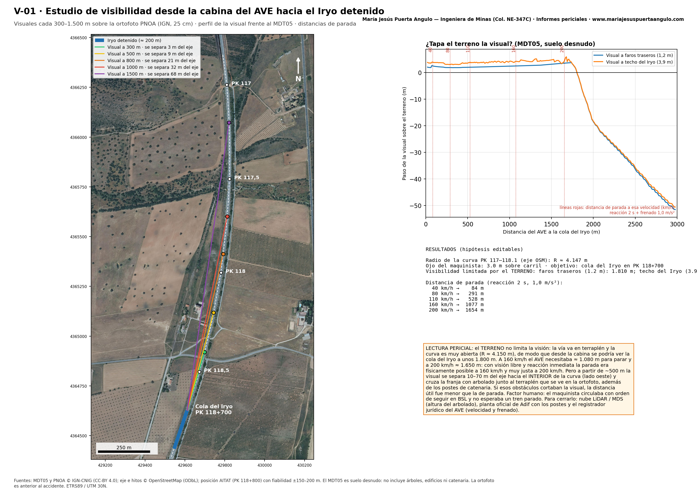
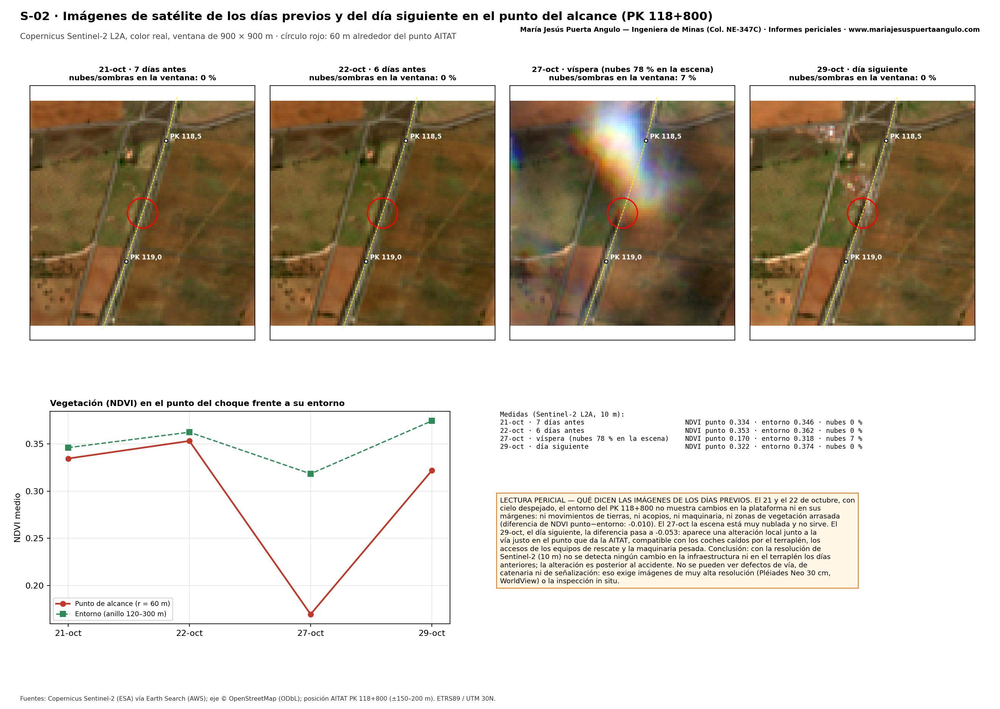
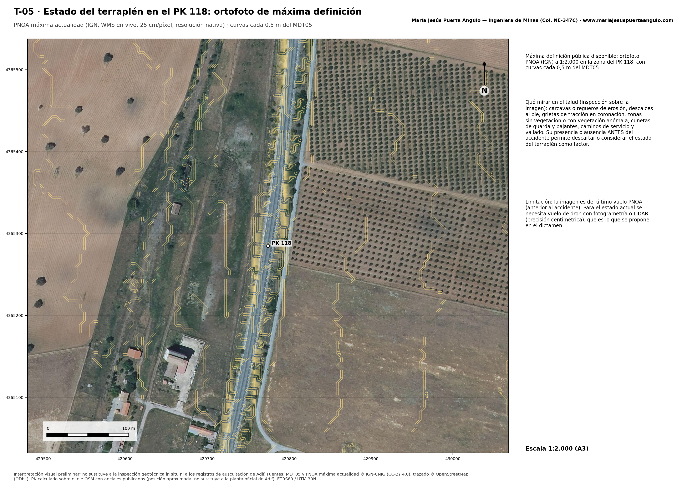
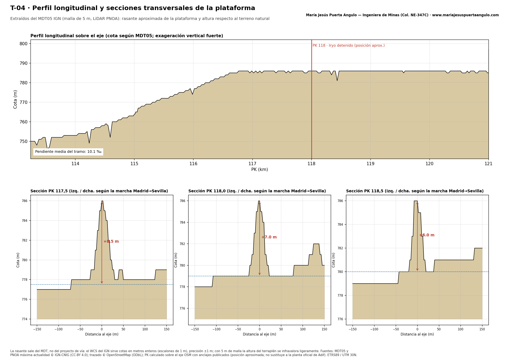
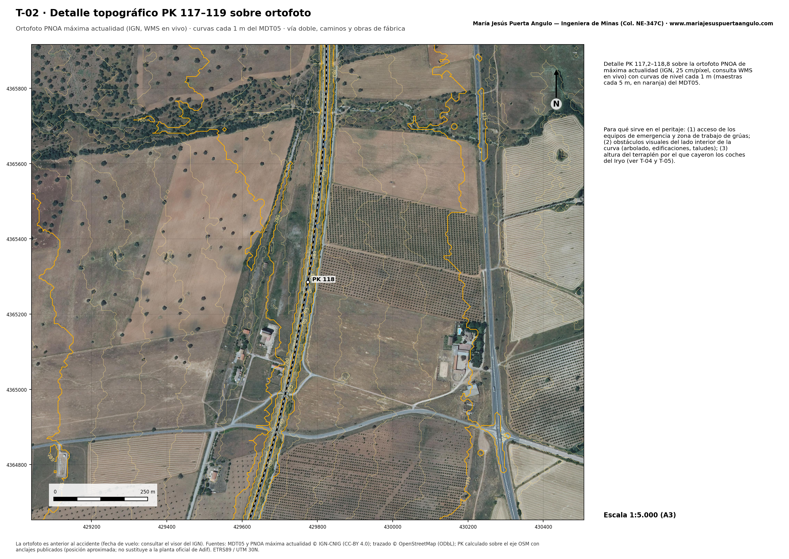
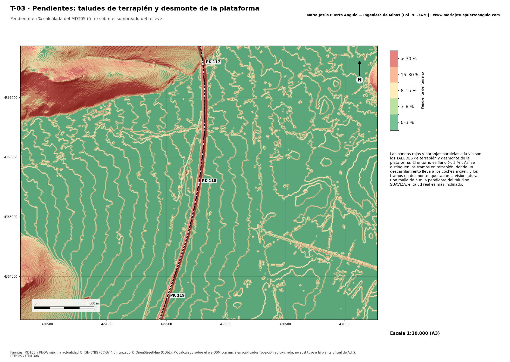
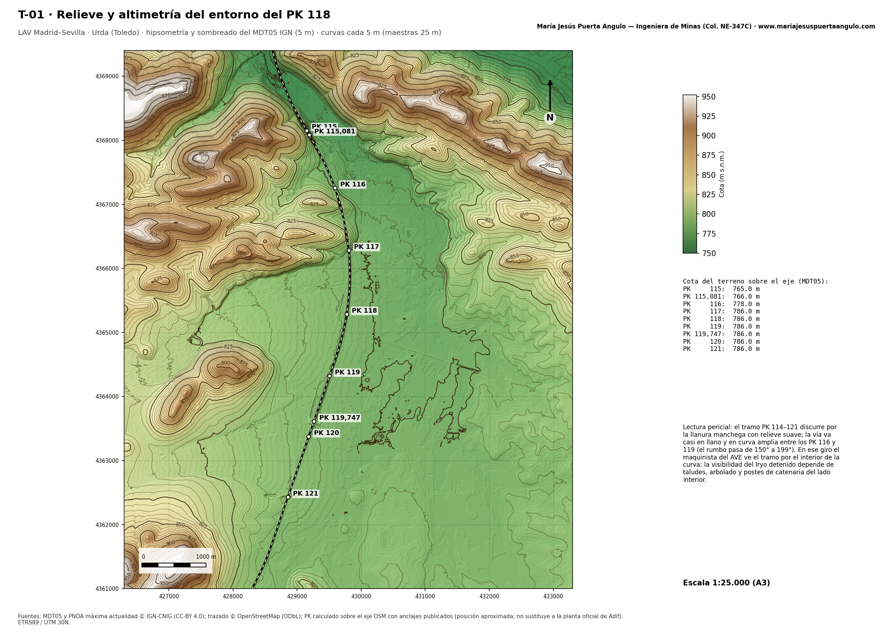
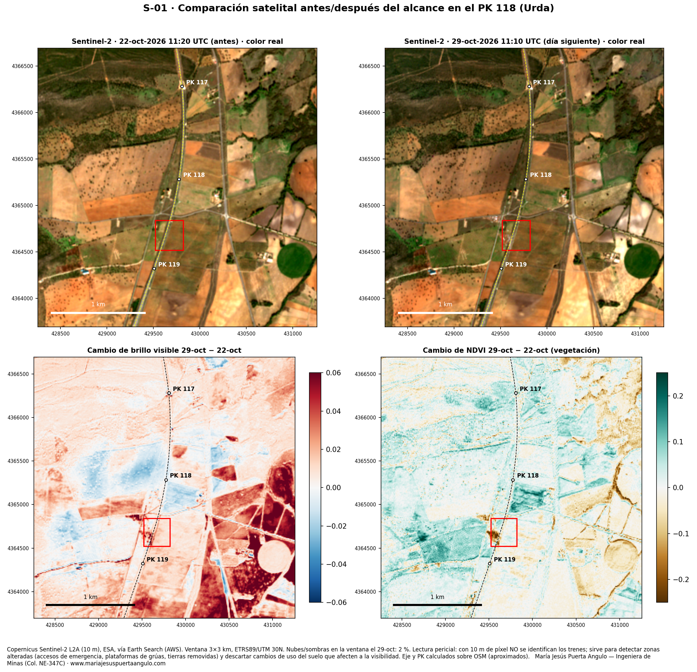

<title>Peritaje Urda 3D</title>
<link rel="stylesheet" href="https://fonts.googleapis.com/css2?family=Public+Sans:wght@400;600;800&family=IBM+Plex+Mono:wght@400;600&display=swap">
<style>
/* Layout: informe pericial en una columna; visor 3D tipo maqueta + panel de parámetros + análisis */
:root{
  --bg:#f3f4f5; --panel:#ffffff; --fg:#1a2127; --muted:#5b6670; --line:#d0d6db;
  --ave:#6b2fa0; --iryo:#c8102e; --accent:#c26f00; --ok:#2f7d4a; --bad:#b3261e; --unk:#7a6a00;
  --display:"Public Sans",system-ui,sans-serif; --mono:"IBM Plex Mono",ui-monospace,monospace;
}
@media (prefers-color-scheme:dark){:root:not([data-theme="light"]){
  --bg:#111519; --panel:#192026; --fg:#e3e7ea; --muted:#98a4ae; --line:#313a42;
  --ave:#b58be0; --iryo:#f2607f; --accent:#f0a33a; --ok:#6cc58d; --bad:#f2847b; --unk:#d9c656; color-scheme:dark}}
:root[data-theme="dark"]{
  --bg:#111519; --panel:#192026; --fg:#e3e7ea; --muted:#98a4ae; --line:#313a42;
  --ave:#b58be0; --iryo:#f2607f; --accent:#f0a33a; --ok:#6cc58d; --bad:#f2847b; --unk:#d9c656; color-scheme:dark}
body{background:var(--bg);color:var(--fg);font-family:var(--display);line-height:1.55;
  padding-left:max(16px,env(safe-area-inset-left,0px));padding-right:max(16px,env(safe-area-inset-right,0px))}
main{max-width:980px;margin:0 auto;padding-block:26px 48px;display:grid;grid-template-columns:minmax(0,1fr);gap:30px}
main>*{min-width:0}
h1{font-size:clamp(1.55rem,4.2vw,2.25rem);line-height:1.15;margin:0;font-weight:800;text-wrap:balance}
h2{font-size:1.15rem;margin:0 0 12px;text-wrap:balance}
h2 .n{font-family:var(--mono);color:var(--accent);margin-right:8px}
.eyebrow{font-family:var(--mono);font-size:.76rem;letter-spacing:.07em;text-transform:uppercase;color:var(--muted)}
p{margin:0 0 10px;max-width:72ch}
.muted{color:var(--muted)}
.viewer{position:relative;border-radius:10px;overflow:hidden;border:1px solid var(--line);background:#cdbfa8;height:clamp(340px,62vh,620px);touch-action:none}
.viewer canvas{display:block;width:100%;height:100%;cursor:grab}
.hud{position:absolute;left:10px;top:10px;display:grid;gap:6px;pointer-events:none;max-width:calc(100% - 20px)}
.hud .card{background:rgba(16,22,28,.78);color:#fff;border-radius:8px;padding:8px 12px;font-family:var(--mono);font-variant-numeric:tabular-nums}
.hud .big{font-size:1.9rem;font-weight:600;line-height:1}
.hud .row{display:flex;gap:8px;flex-wrap:wrap}
.hud small{opacity:.75;font-size:.72rem;display:block}
.phase{font-family:var(--display)!important;font-size:.88rem}
.camb{position:absolute;right:10px;top:10px;display:flex;flex-direction:column;gap:5px}
.camb button{padding:6px 10px;font-size:.78rem}
@media (max-width:560px){.hud{top:auto;bottom:34px}.hud .big{font-size:1.3rem}.camb{flex-direction:row;flex-wrap:wrap;left:10px;justify-content:flex-end}}
.camb button{background:rgba(16,22,28,.78);color:#fff;border:1px solid rgba(255,255,255,.25)}
.camb button[aria-pressed="true"]{background:#fff;color:#111}
.note3d{position:absolute;right:10px;bottom:8px;font-size:.7rem;color:#123;background:rgba(255,255,255,.7);padding:2px 6px;border-radius:4px}
.controls{display:flex;gap:10px;align-items:center;flex-wrap:wrap;margin-top:10px}
button{font:600 .86rem var(--display);background:var(--fg);color:var(--bg);border:0;border-radius:6px;padding:8px 13px;cursor:pointer}
button.ghost{background:var(--panel);color:var(--fg);border:1px solid var(--line)}
button.ghost[aria-pressed="true"]{border-color:var(--accent);box-shadow:inset 0 0 0 1px var(--accent)}
button:focus-visible,input:focus-visible,select:focus-visible{outline:2px solid var(--accent);outline-offset:2px}
input[type=range]{accent-color:var(--accent)}
#tl{flex:1;min-width:200px}
select,input[type=number]{font:inherit;background:var(--panel);color:var(--fg);border:1px solid var(--line);border-radius:6px;padding:6px 8px}
.params{background:var(--panel);border:1px solid var(--line);border-radius:10px;padding:16px;display:grid;gap:14px}
.presets{display:flex;gap:8px;flex-wrap:wrap}
.grid2{display:grid;grid-template-columns:repeat(auto-fit,minmax(210px,1fr));gap:14px}
.field{display:grid;gap:4px;min-width:0}
.field label{font-size:.82rem;color:var(--muted);display:flex;justify-content:space-between;gap:8px}
.field label b{font-family:var(--mono);color:var(--fg);font-weight:600}
.tablewrap{overflow-x:auto}
table{border-collapse:collapse;width:100%;font-size:.9rem}
th,td{text-align:left;padding:8px 10px;border-bottom:1px solid var(--line);vertical-align:top}
th{font-size:.75rem;text-transform:uppercase;letter-spacing:.05em;color:var(--muted);font-weight:600}
td.num{font-family:var(--mono);font-variant-numeric:tabular-nums;white-space:nowrap;text-align:right}
.pill{display:inline-block;font-size:.74rem;font-weight:700;padding:2px 8px;border-radius:99px;border:1px solid currentColor;white-space:nowrap}
.pill.bad{color:var(--bad)}.pill.ok{color:var(--ok)}.pill.unk{color:var(--unk)}
.chartbox{background:var(--panel);border:1px solid var(--line);border-radius:10px;padding:12px}
.chartbox svg{display:block;width:100%;min-width:520px;height:auto}
.ax{stroke:var(--line)} .axt{fill:var(--muted);font:11px var(--mono)}
.prof{fill:none;stroke:var(--ave);stroke-width:2.5}
.lim{stroke:var(--muted);stroke-dasharray:5 4} .vis{stroke:var(--ok);stroke-dasharray:5 4}
.seeL{stroke:var(--accent);stroke-dasharray:3 3}
.dot{fill:var(--accent)}
.credit{display:flex;gap:10px;align-items:center;flex-wrap:wrap;margin-top:12px;font-size:.88rem}
.credit a{color:var(--accent);font-weight:700;text-decoration:none;border-bottom:1px solid currentColor}
.kpis{display:grid;grid-template-columns:repeat(auto-fit,minmax(140px,1fr));gap:1px;background:var(--line);border:1px solid var(--line);border-radius:8px;overflow:hidden;margin-top:14px}
.kpis div{background:var(--panel);padding:10px 12px;min-width:0}
.kpis b{display:block;font-family:var(--mono);font-size:1.15rem;font-variant-numeric:tabular-nums}
.kpis span{font-size:.78rem;color:var(--muted)}
.src{font-size:.75rem;color:var(--muted)}
.sunax{stroke:var(--line)} .sunt{fill:var(--muted);font:11px var(--mono)} .sunc{fill:none;stroke:var(--accent);stroke-width:2.5} .sunh{stroke:var(--fg);stroke-dasharray:4 4} .sunev{stroke:var(--iryo);stroke-width:1.5}
.verdict{border-left:4px solid var(--accent);background:var(--panel);padding:12px 16px;border-radius:0 8px 8px 0}
.verdict b{font-family:var(--mono)}
ol.concl{margin:0;padding-left:20px;display:grid;gap:8px;max-width:72ch}
ul{margin:0;padding-left:18px;display:grid;gap:6px;max-width:72ch}
footer{border-top:1px solid var(--line);padding-top:14px;font-size:.78rem;color:var(--muted);display:grid;gap:8px}
@media (prefers-reduced-motion:reduce){*{transition:none!important}}
.srv{display:flex;flex-wrap:wrap;gap:6px;margin:8px 0 10px}
.srv span{font:600 .74rem var(--mono);padding:3px 9px;border-radius:99px;border:1px solid var(--line);background:var(--panel)}
.srv span.ok{border-color:#2e8b57;color:#2e8b57}.srv span.ko{border-color:#c0392b;color:#c0392b}
.gal{display:grid;grid-template-columns:repeat(auto-fit,minmax(260px,1fr));gap:12px;margin-top:10px}
.gal a{display:block;background:var(--panel);border:1px solid var(--line);border-radius:10px;overflow:hidden;color:inherit;text-decoration:none}
.gal img{width:100%;aspect-ratio:1.414;object-fit:cover;display:block}.gal span{display:block;padding:8px 10px;font-size:.82rem}
.cta{background:var(--fg);color:var(--bg);border-radius:12px;padding:24px}
.cta .btn{display:inline-block;background:var(--bg);color:var(--fg);padding:10px 16px;border-radius:8px;font-weight:700;text-decoration:none}
.leaflet-container{font:inherit}

</style>

<main>
<header>
  <div class="eyebrow">Análisis técnico preliminar · Accidente ferroviario de Urda (Toledo) · 28/10/2026</div>
  <h1>Reconstrucción 3D y análisis cinemático del alcance AVE–Iryo en el PK 118</h1>
  <div class="credit"><span>Creado por <b>María Jesús Puerta Angulo</b></span><span class="muted">·</span><a href="https://www.mariajesuspuertaangulo.com" target="_blank" rel="noopener">mariajesuspuertaangulo.com</a></div>
  <div class="kpis">
    <div><b>AVE 2080</b><span>Madrid → Sevilla</span></div>
    <div><b>Iryo 6076</b><span>detenido desde 08:30</span></div>
    <div><b>PK 118</b><span>LAV Madrid–Sevilla, Urda (Toledo)</span></div>
    <div><b>25 km</b><span>recorridos tras la orden de 08:36</span></div>
    <div><b>397 + 147</b><span>viajeros AVE + Iryo</span></div>
    <div><b>11,6°</b><span>altura del sol a las 08:48</span></div>
    <div><b>425 / 500 t</b><span>masa de fabricante S-103 / S-109</span></div>
    <div><b>68–69</b><span>fallecidos (balance provisional)</span></div>
  </div>
  <p class="muted" style="margin-top:12px">Documento de trabajo elaborado solo con información pública a 29/10/2026. Las masas, la deceleración y la distancia de visibilidad son hipótesis editables. No sustituye a un dictamen pericial con acceso a los registradores jurídicos de los trenes, a los registros del LZB y a las grabaciones del Centro de Control.</p>
</header>

<section>
  <h2><span class="n">01</span>Reconstrucción 3D</h2>
  <div class="viewer" id="viewer">
    <div class="hud" aria-live="polite">
      <div class="row">
        <div class="card"><small>Hora</small><span class="big" id="hClock">08:47:50</span></div>
        <div class="card"><small>Velocidad AVE</small><span class="big" id="hSpeed">0</span> km/h</div>
        <div class="card"><small>Distancia al Iryo</small><span class="big" id="hDist">0</span> m</div>
      </div>
      <div class="card phase" id="hPhase">—</div>
      <div class="card phase" id="hSun" style="font-size:.75rem">—</div>
    </div>
    <div class="camb" role="group" aria-label="Cámara">
      <button type="button" data-cam="drone" aria-pressed="true">Dron</button>
      <button type="button" data-cam="follow" aria-pressed="false">Seguir AVE</button>
      <button type="button" data-cam="cab" aria-pressed="false">Cabina AVE</button>
      <button type="button" data-cam="impact" aria-pressed="false">Impacto</button>
      <button type="button" data-cam="witness" aria-pressed="false">Testigo</button>
      <button type="button" data-cam="overview" aria-pressed="false">General</button>
    </div>
    <div class="note3d">Arrastra para girar · rueda o pellizco para acercar</div>
  </div>
  <div class="controls">
    <button id="play" type="button">Reproducir</button>
    <button id="restart" class="ghost" type="button">Desde 08:34</button>
    <input id="tl" type="range" min="-120" max="800" step="0.5" value="700" aria-label="Línea de tiempo">
    <label class="muted" for="rate">Velocidad</label>
    <label class="muted"><input id="shadows" type="checkbox" checked> Sombras</label>
    <label class="muted"><input id="labels" type="checkbox" checked> Etiquetas</label>
    <select id="rate"><option value="1">×1 tiempo real</option><option value="10">×10</option><option value="30" selected>×30</option><option value="60">×60</option></select>
  </div>
  <p class="muted" style="margin-top:8px;font-size:.85rem">Escala real (1 unidad = 1 m). Vía doble sobre terraplén de 7 m (altura medida en el MDT05 del IGN en el PK 118, ±1 m), catenaria, hitos kilométricos y entorno de olivar y cereal manchego, con el sol bajo de primera hora. El trazado se simplifica como recta; en la realidad el PK 118 está en una curva amplia (el rumbo pasa de 176° a 199° entre los PK 117 y 119, ver sección 07). Las señales aparecen apagadas porque su aspecto real se desconoce. El descarrilamiento, el polvo y los restos son ilustrativos: solo se sabe que dos coches del Iryo cayeron por el terraplén. Si el visor va lento en el móvil, desactiva las sombras.</p>
</section>

<section class="params" aria-label="Parámetros del análisis">
  <h2 style="margin:0"><span class="n">02</span>Escenarios e hipótesis</h2>
  <div class="presets" role="group" aria-label="Escenarios">
    <button class="ghost" type="button" data-preset="a" aria-pressed="true">A · Impacto 08:48 (Iryo)</button>
    <button class="ghost" type="button" data-preset="b" aria-pressed="false">B · Impacto 08:54 (112)</button>
    <button class="ghost" type="button" data-preset="c" aria-pressed="false">C · Crucero 175 km/h</button>
    <button class="ghost" type="button" data-preset="d" aria-pressed="false">D · Marcha a la vista 40 km/h</button>
  </div>
  <div class="grid2">
    <div class="field"><label for="pV">Velocidad de crucero <b id="oV"></b></label><input id="pV" type="range" min="40" max="200" step="1"></div>
    <div class="field"><label for="pS">Distancia de visibilidad del Iryo <b id="oS"></b></label><input id="pS" type="range" min="100" max="2000" step="25"></div>
    <div class="field"><label for="pT">Tiempo de reacción del maquinista <b id="oT"></b></label><input id="pT" type="range" min="1" max="5" step="0.1"></div>
    <div class="field"><label for="pA">Deceleración de emergencia <b id="oA"></b></label><input id="pA" type="range" min="0.6" max="1.3" step="0.05"></div>
    <div class="field"><label for="mA">Masa AVE en servicio (t)</label><input id="mA" type="number" min="200" max="900" step="1"></div>
    <div class="field"><label for="mI">Masa Iryo en servicio (t)</label><input id="mI" type="number" min="200" max="900" step="1"></div>
  </div>
  <p class="muted" style="margin:0;font-size:.85rem">Masas por defecto según fabricante: AVE serie 103 (Siemens Velaro E) 425 t + 397 viajeros × 80 kg = 457 t; Iryo serie 109 (Frecciarossa 1000) 500 t + 147 × 80 kg = 512 t. La serie del AVE 2080 no se ha confirmado públicamente: si fuera otra (S-100, S-112, S-106), introduce su masa. Deceleración de emergencia del AVE: el fabricante no la publica; 1,0 m/s² es hipótesis (la del Iryo, según ficha, es 1,2 m/s²). Aceleración de arranque supuesta: 0,4 m/s².</p>
</section>

<section>
  <h2><span class="n">03</span>Análisis cinemático y energético</h2>
  <div class="verdict" id="verdict"></div>
  <div class="tablewrap" style="margin-top:14px">
    <table id="calc"><thead><tr><th>Magnitud</th><th style="text-align:right">Valor</th><th>Cálculo / comentario</th></tr></thead><tbody></tbody></table>
  </div>
  <div class="chartbox" style="margin-top:16px">
    <div class="presets" style="margin-bottom:8px" role="group" aria-label="Rango del gráfico">
      <button class="ghost" type="button" data-range="full" aria-pressed="false">Recorrido completo (25 km)</button>
      <button class="ghost" type="button" data-range="end" aria-pressed="true">Últimos 3.000 m</button>
    </div>
    <div class="tablewrap"><svg id="chart" viewBox="0 0 760 280" role="img" aria-label="Velocidad del AVE frente a distancia recorrida"></svg></div>
    <p class="muted" style="font-size:.82rem;margin:6px 0 0">Línea morada: perfil simulado del AVE. Gris discontinua: 200 km/h, máximo bajo BSL según EFE. Verde: 40 km/h, marcha a la vista. Naranja: punto en que el Iryo entra en el campo visual.</p>
  </div>
  <div class="tablewrap" style="margin-top:16px">
    <table><thead><tr><th>Fuente del tiempo de recorrido</th><th style="text-align:right">Tiempo</th><th style="text-align:right">Velocidad media sobre 25 km</th></tr></thead>
    <tbody>
      <tr><td>Orden 08:36 → impacto 08:48 (hora de Iryo)</td><td class="num">12 min</td><td class="num">125 km/h</td></tr>
      <tr><td>"Unos 17 minutos" sin corregir la orden (EFE)</td><td class="num">17 min</td><td class="num">88 km/h</td></tr>
      <tr><td>Orden 08:36 → impacto 08:54 (hora del 112)</td><td class="num">18 min</td><td class="num">83 km/h</td></tr>
      <tr><td>Media de 150–200 km/h en los minutos previos (elDiario.es)</td><td class="num">7,5–10 min</td><td class="num">150–200 km/h</td></tr>
    </tbody></table>
  </div>
  <p class="muted" style="margin-top:8px;font-size:.88rem">Las cifras publicadas no son compatibles entre sí. Si la velocidad media fue de 150–200 km/h, o la orden fue posterior a las 08:36, o la distancia fue mayor de 25 km, o hubo paradas intermedias. Solo el registrador jurídico del AVE puede cerrarlo.</p>
</section>


<section>
  <h2><span class="n">03b</span>Ficha técnica de fabricante</h2>
  <div class="tablewrap"><table>
    <thead><tr><th>Dato</th><th style="text-align:right">AVE · Renfe S-103</th><th style="text-align:right">Iryo · S-109</th><th>Fuente / nota</th></tr></thead>
    <tbody>
      <tr><td>Plataforma y fabricante</td><td class="num">Velaro E · Siemens</td><td class="num">Frecciarossa 1000 · Hitachi/Bombardier</td><td class="src">Siemens; Wikipedia</td></tr>
      <tr><td>Longitud de la composición</td><td class="num">200 m</td><td class="num">202 m</td><td class="src">S-103: cabeza 25,675 m + intermedios 24,775 m</td></tr>
      <tr><td>Anchura de caja</td><td class="num">2,95 m</td><td class="num">2,924 m</td><td class="src"></td></tr>
      <tr><td>Altura</td><td class="num">3,89 m</td><td class="num">4,08 m</td><td class="src">19 cm de diferencia: relevante para el análisis de acaballamiento entre testeros</td></tr>
      <tr><td>Masa</td><td class="num">425 t</td><td class="num">500 t</td><td class="src">Valor publicado; no se indica si es en vacío o en servicio</td></tr>
      <tr><td>Carga máxima por eje</td><td class="num">17 t</td><td class="num">17 t</td><td class="src">Ficha Siemens; Wikipedia</td></tr>
      <tr><td>Coches / bogies</td><td class="num">8 / 16</td><td class="num">8 (4M4T)</td><td class="src"></td></tr>
      <tr><td>Potencia de tracción</td><td class="num">8.800 kW</td><td class="num">9.800 kW</td><td class="src"></td></tr>
      <tr><td>Velocidad máxima en servicio</td><td class="num">300 km/h</td><td class="num">300 km/h</td><td class="src">S-103 homologado a 350; S-109 diseñado para 360</td></tr>
      <tr><td>Aceleración</td><td class="num">n. p.</td><td class="num">0,7 m/s²</td><td class="src">n. p. = no publicada en las fuentes consultadas</td></tr>
      <tr><td>Deceleración</td><td class="num">n. p.</td><td class="num">1,2 m/s²</td><td class="src"></td></tr>
      <tr><td>Sistemas de freno</td><td class="num">Regenerativo, reostático y neumático</td><td class="num">n. p.</td><td class="src">S-103 conserva el 75 % de tracción y freno con una unidad averiada</td></tr>
      <tr><td>Plazas</td><td class="num">404–405</td><td class="num">457</td><td class="src">Ocupación el día del accidente: 397 y 147</td></tr>
    </tbody></table></div>
  <h2 style="margin-top:22px">Energía y parada según velocidad (AVE)</h2>
  <div class="tablewrap"><table id="etab"><thead><tr><th style="text-align:right">Velocidad</th><th style="text-align:right">Energía cinética</th><th style="text-align:right">Recorrido en reacción</th><th style="text-align:right">Frenada</th><th style="text-align:right">Parada total</th><th style="text-align:right">Tiempo de parada</th></tr></thead><tbody></tbody></table></div>
  <p class="src" style="margin-top:6px">Calculado con la masa, el tiempo de reacción y la deceleración del panel 02. Se actualiza al cambiarlos.</p>
</section>

<section>
  <h2><span class="n">03c</span>Luz solar en el lugar y la hora del accidente</h2>
  <p>Posición del sol calculada con el algoritmo de la NOAA, con refracción atmosférica, para el 28/10/2026 en hora oficial CET (UTC+1, ya sin horario de verano) y coordenadas del PK 118 calculadas sobre el trazado real de OpenStreetMap: <b style="font-family:var(--mono)">39,433° N · 3,816° O</b>, rumbo de la vía 191°. Un error de ±10 km en la ubicación cambia los resultados en menos de un minuto.</p>
  <div class="kpis">
    <div><b>06:09</b><span>alba astronómica</span></div>
    <div><b>07:12</b><span>alba civil</span></div>
    <div><b>07:39</b><span>salida del sol</span></div>
    <div><b>11,6°</b><span>altura a las 08:48</span></div>
    <div><b>118°</b><span>azimut a las 08:48 (ESE)</span></div>
    <div><b>×4,9</b><span>longitud de sombra / altura</span></div>
  </div>
  <div class="chartbox" style="margin-top:14px"><div class="tablewrap"><svg id="sunchart" viewBox="0 0 760 240" role="img" aria-label="Altura del sol entre las 06:00 y las 11:00"></svg></div></div>
  <div class="tablewrap" style="margin-top:14px"><table>
    <thead><tr><th>Hora</th><th>Hecho</th><th style="text-align:right">Altura</th><th style="text-align:right">Azimut</th><th style="text-align:right">Respecto a la marcha*</th><th style="text-align:right">Masa de aire</th><th style="text-align:right">Irradiancia directa**</th></tr></thead>
    <tbody>
      <tr><td class="num">08:30</td><td>Cae el LZB, se detienen 6 trenes</td><td class="num">8,5°</td><td class="num">114,8°</td><td class="num">60° izda.</td><td class="num">6,5</td><td class="num">≈ 380 W/m²</td></tr>
      <tr><td class="num">08:36</td><td>Orden de reanudar al AVE</td><td class="num">9,5°</td><td class="num">115,8°</td><td class="num">59° izda.</td><td class="num">5,8</td><td class="num">≈ 420 W/m²</td></tr>
      <tr><td class="num">08:42</td><td>AVE en marcha hacia el Iryo</td><td class="num">10,6°</td><td class="num">116,9°</td><td class="num">58° izda.</td><td class="num">5,3</td><td class="num">≈ 450 W/m²</td></tr>
      <tr><td class="num">08:48</td><td>Impacto (hora de Iryo)</td><td class="num">11,6°</td><td class="num">118,0°</td><td class="num">57° izda.</td><td class="num">4,9</td><td class="num">≈ 480 W/m²</td></tr>
      <tr><td class="num">08:54</td><td>Aviso al 112</td><td class="num">12,6°</td><td class="num">119,0°</td><td class="num">56° izda.</td><td class="num">4,5</td><td class="num">≈ 505 W/m²</td></tr>
    </tbody></table></div>
  <p class="src" style="margin-top:6px">* Supone un rumbo de la vía de unos 175° (hacia el SSE, dirección Sevilla); debe ajustarse con el trazado real del PK 118. ** Cielo despejado, modelo de Meinel.</p>
  <h3 style="font-size:1rem;margin:16px 0 8px">Meteorología del 28/10/2026</h3>
  <div class="tablewrap"><table>
    <thead><tr><th>Variable</th><th>Dato disponible</th><th>Fuente</th></tr></thead>
    <tbody>
      <tr><td>Estado del cielo</td><td>Poco nuboso o despejado, con intervalos de nubes bajas matinales y vespertinas</td><td class="src">Predicción AEMET para Castilla-La Mancha</td></tr>
      <tr><td>Nieblas</td><td>Solo previstas al final del día y en el este de Cuenca y Albacete. Ninguna para Toledo por la mañana</td><td class="src">Predicción AEMET</td></tr>
      <tr><td>Temperatura en Toledo</td><td>Mínima 7 °C · máxima 23 °C</td><td class="src">Predicción AEMET</td></tr>
      <tr><td>Viento</td><td>Flojo, de componente este</td><td class="src">Predicción AEMET</td></tr>
      <tr><td>Visibilidad horizontal observada 08:00–09:00</td><td><b>Sin dato público.</b> La estación AEMET de Toledo (3260B) tiene registro horario de ese día, pero la visibilidad no se publica en abierto y el observatorio está a unos 45 km</td><td class="src">AEMET 3260B</td></tr>
    </tbody></table></div>
  <p class="src" style="margin-top:6px">Las "nubes bajas matinales" pudieron atenuar el sol a primera hora. Para un dictamen hay que solicitar a AEMET el certificado de datos de las estaciones más próximas al PK 118 (visibilidad, nubosidad, humedad, insolación) entre las 08:00 y las 09:00.</p>
  <h3 style="font-size:1rem;margin:16px 0 8px">Lectura técnica de la luz</h3>
  <ul>
    <li>El sol llevaba poco más de una hora sobre el horizonte, a unos 10–12° de altura. Es luz rasante, con sombras de casi cinco veces la altura de los objetos.</li>
    <li>Con un rumbo cercano a 175°, el sol quedaba unos 57° a la izquierda de la línea de visión del maquinista del AVE. Fuera del cono de deslumbramiento frontal, pero con fuerte contraluz lateral en la cabina.</li>
    <li>El testero trasero del Iryo miraba al norte, de espaldas al sol (más de 120° respecto a su azimut). El maquinista del AVE lo veía en sombra propia, recortado contra un paisaje iluminado. Eso reduce el contraste; los pilotos rojos de cola debían seguir siendo visibles.</li>
    <li>Si el rumbo real difiere en ±20°, el ángulo con el sol varía entre unos 37° y 77°. La conclusión sobre el deslumbramiento frontal no cambia.</li>
    <li>La predicción de AEMET no indicaba nieblas en Toledo esa mañana. Con cielo poco nuboso, la visibilidad atmosférica no debería haber sido el factor limitante; queda por confirmar con datos observados.</li>
    <li>La simulación 3D mueve el sol con el reloj: la altura y el azimut de cada instante salen del mismo cálculo.</li>
  </ul>
</section>

<section>
  <h2><span class="n">03d</span>Paisaje modelado</h2>
  <p>El entorno 3D se ha construido sobre la geografía real de la zona, orientado al norte geográfico, con la vía como eje: llanura manchega a unos 700 m de altitud, parcelas de cereal, viña y olivar, Montes de Toledo al oeste y la sierra al sur de Urda. El 3D es ilustrativo; los datos reales del terreno (MDT05 y ortofoto PNOA del IGN, trazado OSM, meteorología del día) están conectados en la sección 07. Para el dictamen definitivo se añadirá el trazado oficial de Adif.</p>
  <div class="tablewrap"><table>
    <thead><tr><th>Referencia</th><th style="text-align:right">Coordenadas aprox.</th><th style="text-align:right">Distancia al PK 118</th><th>Posición</th><th style="text-align:right">Altitud aprox.</th></tr></thead>
    <tbody>
      <tr><td>PK 118 (impacto)</td><td class="num">39,433 N · 3,816 O</td><td class="num">—</td><td>Terraplén de ≈ 7 m sobre el terreno (MDT05 IGN, ±1 m)</td><td class="num">786 m (MDT05)</td></tr>
      <tr><td>Urda (casco urbano; el alcalde sitúa el choque a unos 8 km)</td><td class="num">39,41 N · 3,72 O</td><td class="num">≈ 8–12 km</td><td>Al SE, por delante y a la izquierda de la marcha</td><td class="num">≈ 690 m</td></tr>
      <tr><td>Los Yébenes</td><td class="num">39,58 N · 3,87 O</td><td class="num">≈ 11 km</td><td>Al NO, en el piedemonte de los Montes de Toledo</td><td class="num">≈ 850 m</td></tr>
      <tr><td>Mora</td><td class="num">39,69 N · 3,77 O</td><td class="num">≈ 21 km</td><td>Al N, cerca de donde arrancó el AVE tras la orden</td><td class="num">≈ 715 m</td></tr>
      <tr><td>Montes de Toledo</td><td class="num">—</td><td class="num">8–20 km</td><td>Al oeste, cumbres de 1.100–1.200 m</td><td class="num">≈ 1.150 m</td></tr>
    </tbody></table></div>
</section>

<section>
  <h2><span class="n">03e</span>Trazado oficial y visibilidad desde la cabina</h2>
  <p>Puntos kilométricos y velocidades máximas de la línea en el tramo recorrido por el AVE tras la orden de las 08:36. El choque se produjo en el término municipal de Los Yébenes, a menos de 2 km del puesto de Urda.</p>
  <div class="tablewrap"><table>
    <thead><tr><th>Tramo / instalación</th><th style="text-align:right">PK</th><th style="text-align:right">V. máx. de línea</th><th>Lectura</th></tr></thead>
    <tbody>
      <tr><td>PAET Mora y Orgaz</td><td class="num">89,536</td><td class="num">—</td><td>Instalación anterior al tramo afectado</td></tr>
      <tr><td>Arranque supuesto del AVE (25 km antes)</td><td class="num">≈ 93</td><td class="num">—</td><td>Deducido de los 25 km recorridos</td></tr>
      <tr><td>PK 99,337 – 103,386</td><td class="num">4,0 km</td><td class="num">290 km/h</td><td>Curvas de gran radio</td></tr>
      <tr><td>Puesto de banalización Los Yébenes</td><td class="num">104,823</td><td class="num">—</td><td></td></tr>
      <tr><td>PK 103,386 – 111,972 · recta de Los Yébenes</td><td class="num">8,6 km</td><td class="num">300 km/h</td><td>Recta: visibilidad limitada solo por la atmósfera y la percepción</td></tr>
      <tr><td>PK 111,972 – 115,081</td><td class="num">3,1 km</td><td class="num">290 km/h</td><td>Curva de transición</td></tr>
      <tr><td>PK 115,081 – 170,189</td><td class="num">desde 3 km antes del choque</td><td class="num">270 km/h</td><td>Limitación compatible con curvas de radio menor</td></tr>
      <tr><td><b>Punto del choque</b></td><td class="num"><b>118</b></td><td class="num">270 km/h</td><td>Terraplén; dos coches del Iryo y la cabeza del AVE descarrilados</td></tr>
      <tr><td>PAET Urda</td><td class="num">119,747</td><td class="num">270 km/h</td><td>1,7 km después del choque</td></tr>
    </tbody></table></div>
  <p class="src" style="margin-top:6px">Fuente: Wikipedia (Línea de alta velocidad Madrid–Sevilla, perfil de velocidades de Adif); Lisanews. Bajo BSL sin LZB, el AVE quedaba limitado a 200 km/h según EFE, por debajo de cualquiera de estas velocidades de línea.</p>

  <h3 style="font-size:1rem;margin:18px 0 8px">Calculadora de visibilidad en curva</h3>
  <p>Si el PK 118 está en curva, la distancia a la que el maquinista puede ver el tren parado depende del radio y del obstáculo lateral más próximo por el interior (talud de desmonte, postes de catenaria, vegetación). Aproximación geométrica: <b style="font-family:var(--mono)">s = √(8·R·m)</b>. El radio por defecto se estima de la velocidad de 270 km/h con peralte de 140 mm e insuficiencia de 65 mm: <b style="font-family:var(--mono)">R ≈ 11,8·V²/(h+I) ≈ 4.200 m</b>. Es una estimación: el radio real debe tomarse de la planta oficial de Adif.</p>
  <div class="grid2">
    <div class="field"><label for="vR">Radio de la curva <b id="oR"></b></label><input id="vR" type="range" min="2000" max="12000" step="100" value="4200"></div>
    <div class="field"><label for="vM">Distancia lateral al obstáculo <b id="oM"></b></label><input id="vM" type="range" min="2" max="40" step="0.5" value="8"></div>
  </div>
  <div class="verdict" id="visOut" style="margin-top:12px"></div>
  <div class="tablewrap" style="margin-top:12px"><table id="visTab"><thead><tr><th style="text-align:right">Obstáculo lateral</th><th style="text-align:right">R = 3.000 m</th><th style="text-align:right">R = 4.200 m</th><th style="text-align:right">R = 6.000 m</th><th style="text-align:right">R = 9.000 m</th></tr></thead><tbody></tbody></table></div>
  <div class="presets" style="margin-top:12px"><button class="ghost" type="button" id="useVis">Usar esta visibilidad en la simulación</button></div>
</section>
<section>
  <h2><span class="n">04</span>Análisis de barreras de seguridad</h2>
  <div class="tablewrap"><table>
    <thead><tr><th>Barrera</th><th>Estado</th><th>Observación</th></tr></thead>
    <tbody>
      <tr><td>Protección continua LZB</td><td><span class="pill bad">Falló</span></td><td>Caída de la central de Urda por fallo de comunicación entre tres ordenadores. 63 km sin protección según EFE; 69 km según elDiario.es. Sistema de 1992 en sustitución por ERTMS.</td></tr>
      <tr><td>Detención automática</td><td><span class="pill ok">Funcionó</span></td><td>Seis trenes se detuvieron al caer el LZB, entre ellos los dos implicados.</td></tr>
      <tr><td>Protocolo de degradado del Centro de Control</td><td><span class="pill bad">Falló</span></td><td>Según los audios, se ordenó al AVE marcha normal bajo BSL y no marcha a la vista, con el cantón ocupado por el Iryo.</td></tr>
      <tr><td>Señalización lateral (BSL)</td><td><span class="pill unk">Por determinar</span></td><td>Se desconoce qué aspectos mostraban las señales. Es la pregunta técnica central.</td></tr>
      <tr><td>Respaldo puntual tipo ASFA</td><td><span class="pill unk">Por determinar</span></td><td>Debe verificarse si el tramo contaba con un sistema puntual de respaldo y si actuó ante una señal de parada.</td></tr>
      <tr><td>Supervisión del Centro de Control</td><td><span class="pill bad">Falló</span></td><td>La orden no se rectificó durante el recorrido, aunque ambos trenes estaban localizados en todo momento según el ministro.</td></tr>
      <tr><td>Observación visual del maquinista</td><td><span class="pill unk">Insuficiente</span></td><td>A la velocidad autorizada, la distancia de parada supera cualquier visibilidad razonable. Ver apartado 03.</td></tr>
    </tbody></table></div>
</section>

<section>
  <h2><span class="n">05</span>Conclusiones preliminares</h2>
  <ol class="concl" id="concl">
    <li><b>Suceso iniciador técnico:</b> la caída del LZB de Urda dejó el tramo sin protección continua. Por sí sola no causa el choque, porque los trenes se detuvieron correctamente.</li>
    <li><b>Causa operativa directa:</b> según los audios publicados, se autorizó al AVE a circular con marcha normal hacia un cantón ocupado. Con LZB caído y obstáculo por delante, la única marcha compatible con la seguridad era la marcha a la vista.</li>
    <li id="c3"></li>
    <li><b>Contrafactual:</b> a 40 km/h el AVE necesitaba del orden de <span id="c4"></span> m para detenerse. Con cualquier visibilidad mínimamente razonable el alcance habría sido evitable.</li>
    <li><b>Puntos abiertos:</b> el aspecto de las señales, la existencia y actuación de un respaldo puntual, y la hora real de la orden y del impacto. Determinan el reparto de responsabilidades entre factor humano, procedimiento y tecnología.</li>
  </ol>
</section>

<section>
  <h2><span class="n">06</span>Pruebas y datos a recabar</h2>
  <ul>
    <li>Registradores jurídicos (JRU) de ambos trenes: velocidad, frenadas, aspectos de señal recibidos y desconexión del LZB.</li>
    <li>Grabaciones íntegras y registros de órdenes del Centro de Control de Atocha, con sellado de tiempo.</li>
    <li>Logs de la central LZB de Urda y de los enclavamientos: diagnóstico del fallo y secuencia de ocupación de circuitos de vía.</li>
    <li>Normativa interna de Adif para circulación con LZB degradado y formación acreditada de los operadores.</li>
    <li>Historial de averías del LZB en la línea, dado que UGT afirma que fallaba más de lo habitual.</li>
    <li>Ficha homologada de cada composición (serie del AVE 2080, masas en servicio, curvas de frenado de emergencia certificadas).</li>
    <li>Planta y perfil oficiales de Adif entre el PK 112 y el PK 118 (radio exacto, desmontes, postes): la recta de Los Yébenes termina en el PK 112 y el choque fue 6 km después.</li>
    <li>Certificado de AEMET con datos observados del 28/10/2026 entre 08:00 y 09:00 (visibilidad, nubosidad, insolación) de las estaciones más próximas. La predicción publicada solo indica cielo poco nuboso con nubes bajas matinales.</li>
  </ul>
  <p style="margin-top:12px">La Comisión de Investigación de Accidentes Ferroviarios (CIAF) es el órgano técnico que analizará las causas y emitirá recomendaciones. Conviene asegurar desde el primer momento la integridad y la cadena de custodia de todos los datos digitales.</p>
</section>

<section id="real">
  <h2><span class="n">07</span>Datos reales conectados en vivo</h2>
  <p>Mapa con conexión directa a los servidores oficiales: ortofoto PNOA y mapa base del IGN, red ferroviaria de IDEE y parcelario del Catastro, con el trazado real de la línea (OpenStreetMap) y los PK calculados. Cada servidor indica si responde en este momento.</p>
  <div class="srv" id="srv"></div>
  <div id="map" class="viewer" style="height:clamp(360px,64vh,640px);background:#ddd"></div>
  <h3 style="margin-top:20px">Meteorología el 28-oct-2026 en el PK 118 <span class="muted" style="font-weight:400;font-size:.8rem">(Open-Meteo, consulta en vivo)</span></h3>
  <div class="kpis" id="met"><div><b>…</b><span>cargando</span></div></div>
  <p class="verdict" id="metv" style="margin-top:12px">Consultando el servidor meteorológico…</p>
  <h3 style="margin-top:24px">Topografía de detalle y satélite</h3>
  <p class="muted">Elaborado con el MDT05 (malla de 5 m, LiDAR PNOA) y la ortofoto PNOA del IGN, y con imágenes Copernicus Sentinel-2. Pulsa una imagen para verla a tamaño completo.</p>
  <div class="gal">
    <a href="img/V-01_VISIBILIDAD_CABINA_AVE.png" target="_blank"><span>V-01 · Visibilidad desde la cabina del AVE: el terreno deja ver ≈ 1.800 m</span></a>
    <a href="img/S-02_SENTINEL2_DIAS_ANTES_PK118+800.png" target="_blank"><span>S-02 · Satélite 7 y 6 días antes y día siguiente en el PK 118+800</span></a>
    <a href="img/T-05_TALUD_PK118_MAXIMA_DEFINICION.png" target="_blank"><span>T-05 · Terraplén en el PK 118 · PNOA 25 cm · 1:2.000</span></a>
    <a href="img/T-04_PERFIL_Y_SECCIONES_PK118.png" target="_blank"><span>T-04 · Perfil y secciones: terraplén de +6 a +8,5 m</span></a>
    <a href="img/T-02_DETALLE_PK118_ORTO_CURVAS.png" target="_blank"><span>T-02 · Ortofoto con curvas cada 1 m · 1:5.000</span></a>
    <a href="img/T-03_PENDIENTES_PK116-120.png" target="_blank"><span>T-03 · Pendientes: taludes de la plataforma</span></a>
    <a href="img/T-01_RELIEVE_PK114-121.png" target="_blank"><span>T-01 · Relieve del entorno · 1:25.000</span></a>
    <a href="img/S-01_SENTINEL2_ANTES_DESPUES_PK118.png" target="_blank"><span>S-01 · Sentinel-2 antes / después</span></a>
  </div>
</section>

<footer>
  <div>Fuentes: EFE (vía Hoy, 29/10/2026), elDiario.es, Hosteltur, Libertad Digital, CNN Español, The Objective; ficha Velaro E de Siemens Mobility; Wikipedia (Renfe Class 103, Frecciarossa 1000). Posición solar: algoritmo NOAA. Datos provisionales.</div>
  <div>Creado por María Jesús Puerta Angulo · <a href="https://www.mariajesuspuertaangulo.com" target="_blank" rel="noopener">www.mariajesuspuertaangulo.com</a></div>
  <div>María Jesús Puerta Angulo — Ingeniera de Minas (Col. NE-347C) · Graduada en Ingeniería de Recursos Naturales y Energéticos · Graduada en Administración y Gestión Inmobiliaria · Máster en Ingeniería y Gestión Ambiental · Máster en Arquitectura y Bioconstrucción · Máster en Prevención de Riesgos Laborales · Máster en IA aplicada a Ingeniería y Arquitectura · Informes periciales</div>
</footer>
</main>

<link rel="stylesheet" href="https://cdnjs.cloudflare.com/ajax/libs/leaflet/1.9.4/leaflet.min.css">
<script src="https://cdnjs.cloudflare.com/ajax/libs/leaflet/1.9.4/leaflet.min.js"></script>
<script src="https://cdnjs.cloudflare.com/ajax/libs/three.js/r128/three.min.js"></script>
<script src="https://cdn.jsdelivr.net/npm/three@0.128.0/examples/js/controls/OrbitControls.js"></script>
<script src="https://cdn.jsdelivr.net/npm/three@0.128.0/examples/js/objects/Sky.js"></script>
<script>
(function(){
const $=id=>document.getElementById(id);
const D=25000, ACC=0.4, BASE=8*3600+36*60;
const P={V:134,S:600,tr:2.5,ab:1.0,mA:457,mI:512};
const fmtN=(n,d=0)=>n.toLocaleString('es-ES',{minimumFractionDigits:d,maximumFractionDigits:d});
function cruiseFor(T){const a=ACC,disc=a*a*T*T-2*a*D;return disc<0?200:Math.min(200,(a*T-Math.sqrt(disc))*3.6);}
const PRE={a:()=>({V:Math.round(cruiseFor(720))}),b:()=>({V:Math.round(cruiseFor(1080))}),c:()=>({V:175}),d:()=>({V:40})};

let SIM=null;
function simulate(){
  const V=P.V/3.6;let x=0,v=0,t=0,dt=0.1,seen=null,brake=false,last=-1,res='impact',xSee=null,vSee=null;
  const s={t:[],x:[],v:[]};
  while(t<12000){
    const rem=D-x;
    if(seen===null&&rem<=P.S){seen=t;xSee=x;vSee=v;}
    if(seen!==null&&!brake&&t>=seen+P.tr)brake=true;
    if(brake)v=Math.max(0,v-P.ab*dt);else if(v<V)v=Math.min(V,v+ACC*dt);
    x+=v*dt;t+=dt;
    if(t-last>=0.5){s.t.push(t);s.x.push(Math.min(x,D));s.v.push(v);last=t;}
    if(x>=D){x=D;res='impact';break;}
    if(brake&&v<=0){res='stop';break;}
  }
  s.t.push(t);s.x.push(x);s.v.push(v);
  return Object.assign(s,{tEnd:t,vEnd:v,res,tSee:seen,xSee,vSee,xEnd:x});
}
function at(t){
  if(t<=0)return {x:0,v:0};
  const T=SIM.t;if(t>=SIM.tEnd)return {x:SIM.xEnd,v:SIM.res==='impact'?SIM.vEnd:0};
  let lo=0,hi=T.length-1;while(hi-lo>1){const m=(lo+hi)>>1;if(T[m]<=t)lo=m;else hi=m;}
  const t0=lo?T[lo]:0,f=(t-t0)/((T[hi]-t0)||1);
  return {x:SIM.x[lo]+(SIM.x[hi]-SIM.x[lo])*f,v:SIM.v[lo]+(SIM.v[hi]-SIM.v[lo])*f};
}
function clock(t){const a=BASE+t,h=Math.floor(a/3600),m=Math.floor(a%3600/60),s=Math.floor(a%60);return [h,m,s].map(n=>String(n).padStart(2,'0')).join(':');}

/* =================== ESCENA FOTORREALISTA =================== */
const viewer=$('viewer');
const renderer=new THREE.WebGLRenderer({antialias:true,powerPreference:'high-performance'});
renderer.setPixelRatio(Math.min(devicePixelRatio,2));
renderer.outputEncoding=THREE.sRGBEncoding;
renderer.toneMapping=THREE.ACESFilmicToneMapping;renderer.toneMappingExposure=0.62;
renderer.shadowMap.enabled=true;renderer.shadowMap.type=THREE.PCFSoftShadowMap;
viewer.prepend(renderer.domElement);
const scene=new THREE.Scene();
const camera=new THREE.PerspectiveCamera(45,1,0.3,160000);

// Posición solar real (NOAA) para 28/10/2026, 39,433 N 3,816 O; t=0 ↔ 08:36 CET (07:36 UTC)
const LAT=39.4334,LON=-3.8162,BEARING=191; // PK 118 sobre el eje OSM; rumbo real de la vía en el PK 118
function solar(ms){const rad=Math.PI/180,jd=ms/86400000+2440587.5,T=(jd-2451545)/36525;
  const L0=(280.46646+T*(36000.76983+T*0.0003032))%360,M=357.52911+T*(35999.05029-0.0001537*T),e=0.016708634-T*(0.000042037+0.0000001267*T);
  const C=Math.sin(M*rad)*(1.914602-T*(0.004817+0.000014*T))+Math.sin(2*M*rad)*(0.019993-0.000101*T)+Math.sin(3*M*rad)*0.000289;
  const om=125.04-1934.136*T,lam=L0+C-0.00569-0.00478*Math.sin(om*rad);
  const eps=23+(26+(21.448-T*(46.815+T*(0.00059-T*0.001813)))/60)/60+0.00256*Math.cos(om*rad);
  const dec=Math.asin(Math.sin(eps*rad)*Math.sin(lam*rad)),y=Math.pow(Math.tan(eps*rad/2),2);
  const eqt=4/rad*(y*Math.sin(2*L0*rad)-2*e*Math.sin(M*rad)+4*e*y*Math.sin(M*rad)*Math.cos(2*L0*rad)-0.5*y*y*Math.sin(4*L0*rad)-1.25*e*e*Math.sin(2*M*rad));
  const d=new Date(ms),mins=d.getUTCHours()*60+d.getUTCMinutes()+d.getUTCSeconds()/60,ha=(((mins+eqt+4*LON)%1440)/4-180)*rad,la=LAT*rad;
  let el=90-Math.acos(Math.sin(la)*Math.sin(dec)+Math.cos(la)*Math.cos(dec)*Math.cos(ha))/rad;
  const az=(Math.atan2(Math.sin(ha),Math.cos(ha)*Math.sin(la)-Math.tan(dec)*Math.cos(la))/rad+180+360)%360;
  if(el>-0.575){const te=Math.tan(el*rad);el+=(el>5?58.1/te-0.07/Math.pow(te,3)+0.000086/Math.pow(te,5):1735+el*(-518.2+el*(103.4+el*(-12.79+el*0.711))))/3600;}
  return {el,az};}
const T0MS=Date.UTC(2026,9,28,7,36,0);
const SUN=new THREE.Vector3();let SUNP={el:0,az:0};
function setSun(tsec){SUNP=solar(T0MS+tsec*1000);const r=Math.PI/180,rel=(SUNP.az-BEARING)*r,el=SUNP.el*r;SUN.set(Math.cos(rel)*Math.cos(el),Math.sin(el),Math.sin(rel)*Math.cos(el)).normalize();}
setSun(720);
function setSky(sk){const u=sk.material.uniforms;u.turbidity.value=6;u.rayleigh.value=1.5;u.mieCoefficient.value=0.006;u.mieDirectionalG.value=0.84;u.sunPosition.value.copy(SUN);}
const sky=new THREE.Sky();sky.scale.setScalar(120000);setSky(sky);scene.add(sky);
const pm=new THREE.PMREMGenerator(renderer);const envScene=new THREE.Scene();const sky2=new THREE.Sky();sky2.scale.setScalar(50);setSky(sky2);envScene.add(sky2);
scene.environment=pm.fromScene(envScene,0,0.1,100).texture;
scene.fog=new THREE.FogExp2(0xd6cfc4,0.000042);

const sunL=new THREE.DirectionalLight(0xffdcb0,2.3);window.__sunL=sunL;sunL.castShadow=true;
sunL.shadow.mapSize.set(2048,2048);const sc=sunL.shadow.camera;sc.left=-230;sc.right=230;sc.top=230;sc.bottom=-230;sc.near=10;sc.far=5000;
sunL.shadow.bias=-0.0004;sunL.shadow.normalBias=0.04;scene.add(sunL,sunL.target);
scene.add(new THREE.HemisphereLight(0xcfe0f2,0x7d6448,0.35));

const hash=(a,b)=>{const s=Math.sin(a*127.1+b*311.7)*43758.5453;return s-Math.floor(s);};
const STD=(color,rough=0.85,metal=0,extra={})=>new THREE.MeshStandardMaterial(Object.assign({color,roughness:rough,metalness:metal},extra));
function canvasTex(w,h,draw,rep){const c=document.createElement('canvas');c.width=w;c.height=h;draw(c.getContext('2d'),w,h);
  const t=new THREE.CanvasTexture(c);t.encoding=THREE.sRGBEncoding;t.anisotropy=renderer.capabilities.getMaxAnisotropy();
  if(rep){t.wrapS=t.wrapT=THREE.RepeatWrapping;t.repeat.set(rep[0],rep[1]);}return t;}
function speckle(ctx,w,h,n,cols,rmax){for(let i=0;i<n;i++){ctx.fillStyle=cols[i%cols.length];const r=Math.random()*rmax+0.4;ctx.globalAlpha=0.25+Math.random()*0.6;ctx.beginPath();ctx.arc(Math.random()*w,Math.random()*h,r,0,6.283);ctx.fill();}ctx.globalAlpha=1;}

/* ---- Geometría general ---- */
const TOP=7, TC=2.35, RT=TOP+0.91; // terraplén 7 m (MDT05 IGN en el PK 118, ±1 m), eje del terraplén, cota cabeza de carril
const X0=-28000,X1=4000,L=X1-X0,XC=(X0+X1)/2;
const TX0=-32000,TW=58000,TZ0=-20000,TH=40000;
const smooth=(a,b,x)=>{const t=Math.min(1,Math.max(0,(x-a)/(b-a)));return t*t*(3-2*t);};
// Ejes: x = sentido de la marcha (rumbo ≈175°, hacia Sevilla); +z = oeste (derecha); -z = este (izquierda)
const G=(x,z,cx,cz,sx,sz)=>Math.exp(-((x-cx)*(x-cx))/(2*sx*sx)-((z-cz)*(z-cz))/(2*sz*sz));
function terrainH(x,z){const dz=Math.abs(z-TC);if(dz<20)return 0;const s=smooth(20,320,dz),far=smooth(150,1600,dz);
  const n=6*Math.sin(x*0.0011+z*0.0007)+4*Math.sin(x*0.0023-z*0.0019+1.3)+3*Math.sin(z*0.004+x*0.0005)+1.5*Math.sin(x*0.009+z*0.006);
  const yeb=150*G(x,z,-9700,5300,3000,2600);                       // piedemonte de Los Yébenes (≈850 m)
  const mtol=smooth(7500,13000,z)*(380+90*Math.sin(x*0.00045)+60*Math.sin(x*0.0013+z*0.0007)); // Montes de Toledo al oeste
  const ridges=smooth(6500,9000,z)*Math.max(0,Math.sin(x*0.0021+z*0.0013))*70;
  const urda=420*G(x,z,16500,-9000,4200,5200)+180*G(x,z,11000,-12500,2500,3000); // sierras al sur de Urda
  return s*(n+7)+far*(yeb+mtol+ridges+urda);}
const TOWNS=[{n:'Urda',x:10500,z:-6300,r:420,k:520},{n:'Los Yébenes',x:-9700,z:5300,r:520,k:700},{n:'Mora',x:-20200,z:-4000,r:600,k:800}];function bermY(z){const dz=Math.abs(z-TC);if(dz<=7.5)return TOP;if(dz<17)return TOP*(17-dz)/9.5;return terrainH(0,z);}

/* ---- Mosaico agrícola de La Mancha toledana ---- */
const PAL=[['#b0906a','plow'],['#9e7752','plow'],['#c6b07c','stub'],['#7d7a4c','olive'],['#878250','olive'],['#7b8a4e','green'],['#a99062','vine'],['#bda473','stub'],['#93714c','plow']];
function parcel(x,z){const r=Math.floor((z-TZ0)/230),w=280+hash(r,7)*420,off=hash(r,3)*w,c=Math.floor((x-TX0+off)/w);return {r,c,k:Math.floor(hash(r,c)*PAL.length)};}
const mosaic=canvasTex(4096,2816,(ctx,cw,ch)=>{
  const sx=cw/TW,sz=ch/TH;
  for(let r=0;r*230<TH;r++){const w=280+hash(r,7)*420,off=hash(r,3)*w;const z0=r*230*sz,zh=230*sz;
    for(let c=-1;(c*w-off)<TW;c++){const x0=(c*w-off)*sx,xw=w*sx;const k=Math.floor(hash(r,c)*PAL.length),[col,typ]=PAL[k];
      ctx.fillStyle=col;ctx.fillRect(x0,z0,xw+1,zh+1);
      const sh=(hash(c,r)-0.5)*0.18;ctx.fillStyle=sh>0?`rgba(255,240,210,${sh})`:`rgba(40,25,10,${-sh})`;ctx.fillRect(x0,z0,xw+1,zh+1);
      if(typ==='plow'||typ==='stub'){ctx.strokeStyle='rgba(50,30,15,.13)';ctx.lineWidth=0.6;for(let y=z0+1;y<z0+zh;y+=1.6){ctx.beginPath();ctx.moveTo(x0,y);ctx.lineTo(x0+xw,y);ctx.stroke();}}
      if(typ==='vine'){ctx.fillStyle='rgba(70,80,40,.35)';for(let x=x0+0.5;x<x0+xw;x+=1.8)ctx.fillRect(x,z0,0.7,zh);}
      if(typ==='olive'){ctx.fillStyle='rgba(55,65,35,.55)';for(let y=z0+0.5;y<z0+zh;y+=1.1)for(let x=x0+((y|0)%2)*0.5;x<x0+xw;x+=1.0)ctx.fillRect(x,y,0.55,0.45);}
      ctx.strokeStyle='rgba(60,45,25,.35)';ctx.lineWidth=0.5;ctx.strokeRect(x0,z0,xw,zh);}}
  // monte bajo y encinar en las sierras
  for(let py=0;py<ch;py+=3)for(let px=0;px<cw;px+=3){const wx=TX0+px/sx,wz=TZ0+py/sz,hh=terrainH(wx,wz);if(hh<70)continue;
    const a=Math.min(1,(hh-70)/140);ctx.fillStyle=`rgba(${88-30*a|0},${96-25*a|0},${60-20*a|0},${0.35+0.6*a})`;ctx.fillRect(px,py,3,3);
    if(Math.random()<0.5*a){ctx.fillStyle='rgba(35,45,25,.55)';ctx.fillRect(px+Math.random()*3,py+Math.random()*3,1.2,1.2);}}
  TOWNS.forEach(t=>{const g=ctx.createRadialGradient((t.x-TX0)*sx,(t.z-TZ0)*sz,0,(t.x-TX0)*sx,(t.z-TZ0)*sz,t.r*1.3*sx);g.addColorStop(0,'rgba(196,186,170,.95)');g.addColorStop(1,'rgba(196,186,170,0)');ctx.fillStyle=g;ctx.fillRect((t.x-TX0-t.r*1.5)*sx,(t.z-TZ0-t.r*1.5)*sz,t.r*3*sx,t.r*3*sz);});
  const zc=(TC-TZ0)*sz;ctx.fillStyle='#9a8c62';ctx.fillRect(0,zc-26*sz,cw,52*sz);
  ctx.fillStyle='#cbb48e';ctx.fillRect(0,(-27-TZ0)*sz,cw,Math.max(1,5*sz));
  const id=ctx.getImageData(0,0,cw,ch),d=id.data;for(let i=0;i<d.length;i+=4){const n=(Math.random()-0.5)*18;d[i]+=n;d[i+1]+=n;d[i+2]+=n*0.8;}ctx.putImageData(id,0,0);
});
// detalle de suelo a escala métrica (terrones, piedras, rastrojo)
const detail=canvasTex(512,512,(ctx,w,h)=>{ctx.fillStyle='#808080';ctx.fillRect(0,0,w,h);speckle(ctx,w,h,9000,['#5a5a5a','#a8a8a8','#6e6e6e','#bdbdbd'],2.2);speckle(ctx,w,h,400,['#4a4a4a','#cfcfcf'],6);},[1,1]);
detail.encoding=THREE.LinearEncoding;
function addDetail(mat,scale,amt){mat.onBeforeCompile=sh=>{sh.uniforms.dMap={value:detail};
  sh.vertexShader='varying vec3 vWP;\n'+sh.vertexShader.replace('#include <worldpos_vertex>','#include <worldpos_vertex>\nvWP=(modelMatrix*vec4(transformed,1.0)).xyz;');
  sh.fragmentShader='uniform sampler2D dMap;varying vec3 vWP;\n'+sh.fragmentShader.replace('#include <map_fragment>',
   `#include <map_fragment>\nfloat dd=texture2D(dMap,vWP.xz*${scale.toFixed(3)}).r*0.6+texture2D(dMap,vWP.xz*${(scale*0.17).toFixed(4)}).r*0.4;\ndiffuseColor.rgb*=mix(1.0-${amt.toFixed(2)},1.0+${amt.toFixed(2)},dd);`);};}

const tg=new THREE.PlaneGeometry(TW,TH,600,420);tg.rotateX(-Math.PI/2);tg.translate(TX0+TW/2,0,TZ0+TH/2);
{const p=tg.attributes.position;for(let i=0;i<p.count;i++)p.setY(i,terrainH(p.getX(i),p.getZ(i)));tg.computeVertexNormals();}
const tMat=STD(0xffffff,1,0,{map:mosaic});addDetail(tMat,0.35,0.28);
const terrain=new THREE.Mesh(tg,tMat);terrain.receiveShadow=true;scene.add(terrain);

const dummy=new THREE.Object3D();
/* ---- Pueblos (volumetría simplificada) ---- */
{const tot=TOWNS.reduce((a,t)=>a+t.k,0);
 const walls=new THREE.InstancedMesh(new THREE.BoxGeometry(1,1,1),STD(0xe9e2d4,.9),tot),roofs=new THREE.InstancedMesh((()=>{const g=new THREE.ConeGeometry(0.75,0.5,4);g.rotateY(Math.PI/4);return g;})(),STD(0xa4553a,.85),tot);
 walls.frustumCulled=roofs.frustumCulled=false;walls.castShadow=true;let k=0;
 TOWNS.forEach((t,ti)=>{for(let i=0;i<t.k;i++){const a=hash(i,ti)*6.283,r=Math.sqrt(hash(ti,i))*t.r,x=t.x+Math.cos(a)*r,z=t.z+Math.sin(a)*r,w=8+hash(i,3)*10,d=8+hash(i,5)*10,h=4+hash(i,7)*5,y=terrainH(x,z);
   dummy.rotation.set(0,Math.round(hash(i,9)*4)*Math.PI/2+0.2,0);dummy.position.set(x,y+h/2,z);dummy.scale.set(w,h,d);dummy.updateMatrix();walls.setMatrixAt(k,dummy.matrix);
   dummy.position.set(x,y+h+1.2,z);dummy.scale.set(w*1.42,2.4,d*1.42);dummy.updateMatrix();roofs.setMatrixAt(k,dummy.matrix);k++;}
   const tw=new THREE.Mesh(new THREE.BoxGeometry(7,32,7),STD(0xd8c6a6,.9));tw.position.set(t.x,terrainH(t.x,t.z)+16,t.z);tw.castShadow=true;scene.add(tw);});
 scene.add(walls,roofs);}

/* ---- Terraplén, balasto, vía doble ---- */
function extrudeX(shape,mat,z){const g=new THREE.ExtrudeGeometry(shape,{depth:L,bevelEnabled:false});g.rotateY(Math.PI/2);g.translate(X0,0,z);const m=new THREE.Mesh(g,mat);m.receiveShadow=true;scene.add(m);return m;}
const soilTex=canvasTex(256,256,(ctx,w,h)=>{ctx.fillStyle='#a88a62';ctx.fillRect(0,0,w,h);speckle(ctx,w,h,5000,['#8d7150','#c4a77d','#7a6044','#b89d74','#6f7a46'],1.8);},[0.18,0.18]);
const bS=new THREE.Shape();bS.moveTo(-17,0);bS.lineTo(-7.5,TOP);bS.lineTo(7.5,TOP);bS.lineTo(17,0);bS.lineTo(-17,0);
const berm=extrudeX(bS,STD(0xffffff,1,0,{map:soilTex}),TC);
const balTex=canvasTex(256,256,(ctx,w,h)=>{ctx.fillStyle='#8c8984';ctx.fillRect(0,0,w,h);speckle(ctx,w,h,7000,['#6f6c69','#b3afa8','#5c5955','#a19c95','#7d7067'],2.6);},[0.6,0.6]);
const balMat=STD(0xffffff,0.95,0,{map:balTex});
[0,4.7].forEach(z=>{const s=new THREE.Shape();s.moveTo(-2.9,0);s.lineTo(-1.75,0.62);s.lineTo(1.75,0.62);s.lineTo(2.9,0);s.lineTo(-2.9,0);const m=extrudeX(s,balMat,z);m.position.y=TOP;});
const railMat=STD(0xb9bec3,0.32,0.95);const railWeb=STD(0x5a4a3e,0.8,0.3);
[0,4.7].forEach(zc=>[-0.7175,0.7175].forEach(z=>{const head=new THREE.Mesh(new THREE.BoxGeometry(L,0.05,0.072),railMat);head.position.set(XC,RT-0.025,zc+z);
  const web=new THREE.Mesh(new THREE.BoxGeometry(L,0.13,0.03),railWeb);web.position.set(XC,RT-0.11,zc+z);
  const foot=new THREE.Mesh(new THREE.BoxGeometry(L,0.02,0.15),railWeb);foot.position.set(XC,RT-0.165,zc+z);
  [head,web,foot].forEach(m=>{m.castShadow=true;m.receiveShadow=true;scene.add(m);});}));

/* ---- Elementos repetidos con "streaming" alrededor de la cámara ---- */
function inst(geo,mat,n,shadow=true){const m=new THREE.InstancedMesh(geo,mat,n);m.frustumCulled=false;m.castShadow=shadow;m.receiveShadow=true;m.count=0;scene.add(m);return m;}
const NS=2700;
const sleepers=inst(new THREE.BoxGeometry(0.28,0.2,2.6),STD(0x7f7c77,0.95),NS*2,false);
const NF=560;
const fence=inst(new THREE.CylinderGeometry(0.035,0.035,1.6,5),STD(0x7d8287,0.5,0.6),NF*2,false);
const fenceMesh=canvasTex(64,64,(ctx,w,h)=>{ctx.clearRect(0,0,w,h);ctx.strokeStyle='rgba(150,155,160,.9)';ctx.lineWidth=1.2;for(let i=-64;i<64;i+=8){ctx.beginPath();ctx.moveTo(i,0);ctx.lineTo(i+64,64);ctx.stroke();ctx.beginPath();ctx.moveTo(i+64,0);ctx.lineTo(i,64);ctx.stroke();}},[L/2.2,1]);
[-15.6,20.3].forEach(z=>{const f=new THREE.Mesh(new THREE.PlaneGeometry(L,1.5),new THREE.MeshStandardMaterial({map:fenceMesh,transparent:true,alphaTest:0.3,side:THREE.DoubleSide,roughness:.6,metalness:.5}));f.position.set(XC,0,z);f.userData.z=z;scene.add(f);f.position.y=bermY(z)+0.8;});
const olivesC=inst(new THREE.IcosahedronGeometry(1,1),STD(0x3f4a26,1,0,{envMapIntensity:0.35}),9000);
const olivesT=inst(new THREE.CylinderGeometry(0.18,0.28,1.4,6),STD(0x6a5a46,1),9000);
const tufts=inst(new THREE.IcosahedronGeometry(0.5,0),STD(0x4f4d2c,1,0,{envMapIntensity:0.35}),5000,false);
let lastStream=1e9;
function stream(cx){
  if(Math.abs(cx-lastStream)<50)return;lastStream=cx;
  let k=0;const b=Math.floor((cx-810)/0.6)*0.6;
  for(const zc of [0,4.7])for(let i=0;i<NS;i++){dummy.position.set(b+i*0.6,TOP+0.66,zc);dummy.rotation.set(0,0,0);dummy.scale.set(1,1,1);dummy.updateMatrix();sleepers.setMatrixAt(k++,dummy.matrix);}
  sleepers.count=k;sleepers.instanceMatrix.needsUpdate=true;
  k=0;const bf=Math.floor((cx-840)/3)*3;
  for(const z of [-15.6,20.3])for(let i=0;i<NF;i++){dummy.position.set(bf+i*3,bermY(z)+0.8,z);dummy.updateMatrix();fence.setMatrixAt(k++,dummy.matrix);}
  fence.count=k;fence.instanceMatrix.needsUpdate=true;
  // olivares (marco ~8 m) solo en parcelas de olivar
  k=0;const gx=8,x0=Math.floor((cx-480)/gx)*gx;
  for(let x=x0;x<cx+480;x+=gx)for(let z=-520;z<520;z+=gx){
    if(Math.abs(z-TC)<70||k>=9000)continue;const pc=parcel(x+4,z+4);if(PAL[pc.k][1]!=='olive')continue;
    const jx=x+4+(hash(x,z)-0.5)*1.6,jz=z+4+(hash(z,x)-0.5)*1.6,s=0.8+hash(x*0.3,z*0.7)*0.5,y=terrainH(jx,jz);
    dummy.position.set(jx,y+0.7*s,jz);dummy.rotation.set(0,hash(x,z)*6,0);dummy.scale.set(s,s,s);dummy.updateMatrix();olivesT.setMatrixAt(k,dummy.matrix);
    dummy.position.set(jx,y+(1.4+1.3)*s,jz);dummy.scale.set(2.2*s,1.6*s,2.0*s);dummy.updateMatrix();olivesC.setMatrixAt(k,dummy.matrix);k++;}
  olivesC.count=olivesT.count=k;olivesC.instanceMatrix.needsUpdate=olivesT.instanceMatrix.needsUpdate=true;
  // matas de hierba seca en los márgenes
  k=0;const tx0=Math.floor((cx-450)/3)*3;
  for(let x=tx0;x<cx+450&&k<5000;x+=3)for(const zb of [[-70,-17],[21,75]])for(let z=zb[0];z<zb[1]&&k<5000;z+=3){
    if(hash(x*1.3,z*0.7)>0.32)continue;const jx=x+hash(z,x)*3,jz=z+hash(x,z)*3,s=0.6+hash(x,z*2)*0.9;
    dummy.position.set(jx,terrainH(jx,jz)+0.12*s,jz);dummy.rotation.set(0,hash(jx,jz)*6,0);dummy.scale.set(s*1.3,s*0.55,s);dummy.updateMatrix();tufts.setMatrixAt(k++,dummy.matrix);}
  tufts.count=k;tufts.instanceMatrix.needsUpdate=true;
}

/* ---- Catenaria ---- */
const nM=Math.floor(L/55);
const mastGeo=new THREE.BoxGeometry(0.32,8.2,0.32),mastMat=STD(0x9aa1a8,0.45,0.75);
const masts=new THREE.InstancedMesh(mastGeo,mastMat,nM*2);masts.frustumCulled=false;masts.castShadow=true;
const cant=new THREE.InstancedMesh(new THREE.CylinderGeometry(0.05,0.05,3.6,6),mastMat,nM*2);cant.frustumCulled=false;cant.castShadow=true;
for(let i=0;i<nM;i++){const x=X0+i*55;
  [[-3.4,1],[8.1,-1]].forEach(([z,s],j)=>{dummy.rotation.set(0,0,0);dummy.scale.set(1,1,1);dummy.position.set(x,TOP+4.1,z);dummy.updateMatrix();masts.setMatrixAt(i*2+j,dummy.matrix);
    dummy.position.set(x,TOP+7.3,z+s*1.75);dummy.rotation.set(Math.PI/2,0,0);dummy.updateMatrix();cant.setMatrixAt(i*2+j,dummy.matrix);});}
scene.add(masts,cant);
const wireMat=STD(0x8a5a3a,0.4,0.9);
[0,4.7].forEach(z=>{[[RT+5.3,0.012],[RT+6.5,0.01]].forEach(([y,r])=>{const w=new THREE.Mesh(new THREE.BoxGeometry(L,r*2,r*2),wireMat);w.position.set(XC,y,z);scene.add(w);});});

/* ---- Señales laterales e hitos kilométricos ---- */
for(let x=-24000;x<=2000;x+=2000){const g=new THREE.Group();
  const m=new THREE.Mesh(new THREE.CylinderGeometry(0.1,0.12,5,8),STD(0x2b2e31,.6,.6));m.position.y=2.5;
  const h=new THREE.Mesh(new THREE.BoxGeometry(0.45,1.5,0.55),STD(0x15171a,.5,.3));h.position.y=5.4;
  const plate=new THREE.Mesh(new THREE.BoxGeometry(0.02,1.9,0.9),STD(0xe8e6df,.7));plate.position.set(0.24,5.4,0);
  [5.85,5.4,4.95].forEach(y=>{const l=new THREE.Mesh(new THREE.CircleGeometry(0.13,14),STD(0x4a4d50,.3,.2));l.position.set(0.26,y,0);l.rotation.y=Math.PI/2;g.add(l);});
  g.add(m,h,plate);g.children.forEach(c=>c.castShadow=true);g.position.set(x-20,TOP,-4.6);g.rotation.y=-Math.PI/2;g.rotation.y=Math.PI;scene.add(g);}
for(let pk=92;pk<=121;pk++){const x=(pk-118)*1000;
  const tex=canvasTex(128,160,(ctx,w,h)=>{ctx.fillStyle='#f4f4f0';ctx.fillRect(0,0,w,h);ctx.fillStyle='#1d1d1d';ctx.font='bold 64px sans-serif';ctx.textAlign='center';ctx.fillText(String(pk),w/2,100);ctx.fillRect(0,0,w,10);});
  const post=new THREE.Mesh(new THREE.BoxGeometry(0.16,1.1,0.42),[STD(0xf0f0ea),STD(0xf0f0ea),STD(0xf0f0ea),STD(0xf0f0ea),new THREE.MeshStandardMaterial({map:tex,roughness:.7}),new THREE.MeshStandardMaterial({map:tex,roughness:.7})]);
  post.geometry.rotateY(Math.PI/2);post.position.set(x,TOP+0.55,-6.2);post.castShadow=true;scene.add(post);}

/* =================== TRENES =================== */
const NOSE=6,CARL=23.4,PITCH=23.9,NC=8;
const TRAIN_LEN=NOSE*2+CARL+(NC-1)*PITCH;
function rr(ctx,x,y,w,h,r){ctx.beginPath();ctx.moveTo(x+r,y);ctx.arcTo(x+w,y,x+w,y+h,r);ctx.arcTo(x+w,y+h,x,y+h,r);ctx.arcTo(x,y+h,x,y,r);ctx.arcTo(x,y,x+w,y,r);ctx.closePath();}
function liveryTex(kind){return canvasTex(1024,180,(ctx,w,h)=>{
  const ave=kind==='ave';
  ctx.fillStyle=ave?'#e6e8ea':'#8a0b1f';ctx.fillRect(0,0,w,h);
  const gr=ctx.createLinearGradient(0,0,0,h);gr.addColorStop(0,'rgba(255,255,255,.18)');gr.addColorStop(.5,'rgba(255,255,255,0)');gr.addColorStop(1,'rgba(0,0,0,.18)');ctx.fillStyle=gr;ctx.fillRect(0,0,w,h);
  ctx.fillStyle=ave?'#6c757d':'#2e3135';ctx.fillRect(0,150,w,30);
  ctx.fillStyle=ave?'#5b2a86':'#e9e9e9';ctx.fillRect(0,ave?132:140,w,ave?10:4);
  for(let x=96;x<930;x+=58){rr(ctx,x,38,46,56,9);const g2=ctx.createLinearGradient(x,38,x+46,94);g2.addColorStop(0,'#3a4b58');g2.addColorStop(.45,'#15202a');g2.addColorStop(1,'#26323c');ctx.fillStyle=g2;ctx.fill();
    ctx.fillStyle='rgba(255,230,190,.12)';ctx.fillRect(x+4,42,8,48);}
  [[18,58],[948,58]].forEach(([x,dw])=>{ctx.strokeStyle=ave?'rgba(60,60,60,.55)':'rgba(30,0,5,.6)';ctx.lineWidth=2;ctx.strokeRect(x,26,dw,124);rr(ctx,x+14,40,dw-28,44,6);ctx.fillStyle='#1a242d';ctx.fill();});
  ctx.strokeStyle='rgba(0,0,0,.08)';ctx.lineWidth=1;for(let x=0;x<w;x+=128){ctx.beginPath();ctx.moveTo(x,0);ctx.lineTo(x,150);ctx.stroke();}
});}
const LIV={ave:liveryTex('ave'),iryo:liveryTex('iryo')};
const bodyShape=(()=>{const s=new THREE.Shape();s.moveTo(-1.33,0.45);s.lineTo(-1.475,0.95);s.lineTo(-1.475,2.95);s.quadraticCurveTo(-1.45,3.85,-0.85,3.92);s.lineTo(0.85,3.92);s.quadraticCurveTo(1.45,3.85,1.475,2.95);s.lineTo(1.475,0.95);s.lineTo(1.33,0.45);s.lineTo(-1.33,0.45);return s;})();
const bodyGeo=(()=>{const g=new THREE.ExtrudeGeometry(bodyShape,{depth:CARL,bevelEnabled:false,curveSegments:8});g.rotateY(Math.PI/2);g.translate(-CARL/2,0.55,0);return g;})();
const noseGeo=(()=>{const g=new THREE.SphereGeometry(1,40,20,0,Math.PI*2,0,Math.PI/2);g.rotateZ(-Math.PI/2);g.scale(NOSE,1.73,1.475);g.translate(0,2.73,0);return g;})();
const shieldGeo=(()=>{const g=new THREE.SphereGeometry(1,32,12,0,Math.PI*2,0,Math.PI/2);g.rotateZ(-Math.PI/2);g.scale(4.6,0.78,1.18);return g;})();
const wheelGeo=new THREE.CylinderGeometry(0.46,0.46,0.14,18);wheelGeo.rotateX(Math.PI/2);
const darkMetal=STD(0x2a2c2f,0.55,0.7),glass=STD(0x0d151c,0.08,0.4,{envMapIntensity:1.6}),skirtMat=STD(0x3a3f45,0.6,0.4);
function buildCar(kind,i){
  const body=kind==='ave'?0xe9ebed:0x7e0a1c,bodyMat=STD(body,0.38,0.1,{envMapIntensity:kind==='ave'?0.9:0.55});
  const c=new THREE.Group();
  const b=new THREE.Mesh(bodyGeo,bodyMat);b.castShadow=true;b.receiveShadow=true;c.add(b);
  [1,-1].forEach(s=>{const p=new THREE.Mesh(new THREE.PlaneGeometry(CARL-0.6,2.05),new THREE.MeshStandardMaterial({map:LIV[kind],roughness:.36,metalness:.1,envMapIntensity:kind==='ave'?0.9:0.55}));
    p.position.set(0,2.5,s*1.4775);if(s<0)p.rotation.y=Math.PI;c.add(p);});
  // bogies
  [CARL/2-3.2,-(CARL/2-3.2)].forEach(bx=>{const f=new THREE.Mesh(new THREE.BoxGeometry(3.2,0.45,2.2),darkMetal);f.position.set(bx,0.72,0);f.castShadow=true;c.add(f);
    [-1.25,1.25].forEach(wx=>[-0.7175,0.7175].forEach(wz=>{const w=new THREE.Mesh(wheelGeo,darkMetal);w.position.set(bx+wx,0.46,wz);c.add(w);}));});
  // techo
  const r=new THREE.Mesh(new THREE.BoxGeometry(CARL*0.55,0.28,1.5),STD(0x9ea4aa,.5,.5));r.position.set(0,4.55,0);r.castShadow=true;c.add(r);
  if(i===2||i===5){const pg=new THREE.Group();const base=new THREE.Mesh(new THREE.BoxGeometry(1.6,0.2,1.2),darkMetal);base.position.y=4.75;
    const a1=new THREE.Mesh(new THREE.BoxGeometry(2.0,0.06,0.06),darkMetal);a1.position.set(0.6,5.3,0);a1.rotation.z=0.55;
    const a2=new THREE.Mesh(new THREE.BoxGeometry(1.9,0.06,0.06),darkMetal);a2.position.set(0.7,6.1,0);a2.rotation.z=-0.5;
    const hd=new THREE.Mesh(new THREE.BoxGeometry(0.12,0.08,1.7),darkMetal);hd.position.set(0.05,RT+5.3-RT- (0) + 1.25 ,0);hd.position.y=6.55;
    pg.add(base,a1,a2,hd);pg.children.forEach(m=>m.castShadow=true);pg.position.x=-6;c.add(pg);}
  // fuelle entre coches
  const gw=new THREE.Mesh(new THREE.BoxGeometry(0.8,3.1,2.5),STD(0x222528,.9));gw.position.set(-CARL/2-0.3,2.4,0);if(i<NC-1)c.add(gw);
  return {c,bodyMat};
}
function buildNose(kind,dir){ // dir=1 delante, -1 detrás
  const g=new THREE.Group();const mat=STD(kind==='ave'?0xe9ebed:0x7e0a1c,0.34,0.1,{envMapIntensity:kind==='ave'?1:0.55});
  const n=new THREE.Mesh(noseGeo,mat);n.castShadow=true;g.add(n);
  const sh=new THREE.Mesh(shieldGeo,glass);sh.position.set(1.4,3.35,0);sh.rotation.z=-0.08;g.add(sh);
  const sk=new THREE.Mesh(new THREE.BoxGeometry(NOSE*0.85,0.5,2.6),skirtMat);sk.position.set(NOSE*0.38,1.05,0);g.add(sk);
  if(kind==='ave'){const st=new THREE.Mesh(new THREE.BoxGeometry(NOSE*0.75,0.12,2.98),STD(0x5b2a86,.4,.1));st.position.set(NOSE*0.28,1.98,0);g.add(st);}
  const lights=[];[-0.72,0.72].forEach(z=>{const l=new THREE.Mesh(new THREE.SphereGeometry(0.13,12,8),new THREE.MeshStandardMaterial({color:0x111111,emissive:0xffffff,emissiveIntensity:0}));l.position.set(NOSE*0.86,1.75,z);g.add(l);lights.push(l);});
  if(dir<0)g.rotation.y=Math.PI;return {g,lights,mat};
}
function label(txt,col){const c=document.createElement('canvas');c.width=320;c.height=110;const k=c.getContext('2d');
  k.fillStyle=col;rr(k,4,4,312,72,16);k.fill();k.beginPath();k.moveTo(144,76);k.lineTo(176,76);k.lineTo(160,104);k.fill();
  k.fillStyle='#fff';k.font='600 38px "Public Sans",sans-serif';k.textAlign='center';k.textBaseline='middle';k.fillText(txt,160,41);
  const t=new THREE.CanvasTexture(c);t.encoding=THREE.sRGBEncoding;
  const sp=new THREE.Sprite(new THREE.SpriteMaterial({map:t,sizeAttenuation:false,depthTest:false,toneMapped:false}));
  sp.scale.set(0.13,0.045,1);sp.center.set(0.5,0);sp.renderOrder=10;return sp;}
function makeTrain(kind,txt,col){
  const g=new THREE.Group(),cars=[];
  for(let i=0;i<NC;i++){const {c}=buildCar(kind,i);c.position.x=-(NOSE+CARL/2+i*PITCH);g.add(c);cars.push(c);}
  const front=buildNose(kind,1);front.g.position.x=CARL/2;cars[0].add(front.g);
  const rear=buildNose(kind,-1);rear.g.position.x=-CARL/2;cars[NC-1].add(rear.g);
  const lb=label(txt,col);lb.position.set(-TRAIN_LEN/2,9,0);g.add(lb);
  g.position.y=RT;scene.add(g);return {g,cars,front,rear,lb};}
const ave=makeTrain('ave','AVE · Renfe','#5b2a86'),iry=makeTrain('iryo','Iryo · detenido','#a10f26');
ave.front.lights.forEach(l=>{l.material.emissive.set(0xfff4dd);l.material.emissiveIntensity=3;});
iry.rear.lights.forEach(l=>{l.material.emissive.set(0xff1a1a);l.material.emissiveIntensity=4;});
const IRYO_HEAD=TRAIN_LEN; // cola del Iryo en x=0 (PK 118)
const townLabels=TOWNS.map(t=>{const l=label(t.n,'#3d4650');l.position.set(t.x,terrainH(t.x,t.z)+60,t.z);scene.add(l);return l;});

/* ---- Polvo y restos tras el impacto (deterministas para poder rebobinar) ---- */
const dustTex=(()=>{const c=document.createElement('canvas');c.width=c.height=64;const k=c.getContext('2d');const g=k.createRadialGradient(32,32,0,32,32,32);g.addColorStop(0,'rgba(255,255,255,.9)');g.addColorStop(.5,'rgba(255,255,255,.35)');g.addColorStop(1,'rgba(255,255,255,0)');k.fillStyle=g;k.fillRect(0,0,64,64);return new THREE.CanvasTexture(c);})();
const ND=700,dPos=new Float32Array(ND*3),dSeed=[];
for(let i=0;i<ND;i++)dSeed.push([(Math.random()-.5)*14,Math.random()*3,(Math.random()-.5)*6,(Math.random()-.5)*14,1+Math.random()*6,-Math.random()*12+3,0.3+Math.random()*0.9]);
const dGeo=new THREE.BufferGeometry();dGeo.setAttribute('position',new THREE.BufferAttribute(dPos,3));
const dMat=new THREE.PointsMaterial({map:dustTex,color:0xb79e7c,size:6,transparent:true,depthWrite:false,opacity:0});
const dust=new THREE.Points(dGeo,dMat);dust.frustumCulled=false;scene.add(dust);
const NDB=70,debris=inst(new THREE.BoxGeometry(1,1,1),STD(0x3b3f44,.6,.5),NDB);debris.count=NDB;
const dbS=[];for(let i=0;i<NDB;i++){const v=[2+Math.random()*14,2+Math.random()*7,-Math.random()*12+2];const p=[(Math.random()-.5)*6,RT+1+Math.random()*3,(Math.random()-.5)*2];
  let t=0,pp=p.slice();while(t<6){t+=0.01;pp=[p[0]+v[0]*t,p[1]+v[1]*t-4.905*t*t,p[2]+v[2]*t];if(pp[1]<=bermY(pp[2])+0.1&&t>0.1)break;}
  dbS.push({p,v,tl:t,s:[0.2+Math.random()*0.9,0.05+Math.random()*0.2,0.2+Math.random()*0.7],r:Math.random()*6});}

/* =================== CÁMARAS =================== */
const controls=new THREE.OrbitControls(camera,renderer.domElement);
controls.enableDamping=true;controls.dampingFactor=0.08;controls.maxPolarAngle=1.53;controls.minDistance=8;controls.maxDistance=40000;
let mode='drone';let aveX=-D;
const CAM={
  follow:{off:[-48,14,-34],tgt:()=>[aveX-60,RT+2,0]},
  drone:{off:[-240,150,-230],tgt:()=>[-25,RT,0]},
  impact:{off:[-70,22,-62],tgt:()=>[-10,RT,0]},
  overview:{off:[-7000,5200,-14000],tgt:()=>[(aveX+IRYO_HEAD)/2,0,0]},
  witness:{fixed:true},cab:{fixed:true}};
function applyMode(){const c=CAM[mode];controls.enabled=!c.fixed;if(c.fixed)return;
  const t=c.tgt();controls.target.set(...t);camera.position.set(t[0]+c.off[0],t[1]+c.off[1],t[2]+c.off[2]);controls.update();}
document.querySelectorAll('[data-cam]').forEach(b=>b.onclick=()=>{mode=b.dataset.cam;document.querySelectorAll('[data-cam]').forEach(x=>x.setAttribute('aria-pressed',x===b));applyMode();});
function resize(){const w=viewer.clientWidth,h=viewer.clientHeight;renderer.setSize(w,h,false);camera.aspect=w/h;camera.updateProjectionMatrix();}
new ResizeObserver(resize).observe(viewer);resize();
$('shadows').onchange=e=>{renderer.shadowMap.enabled=e.target.checked;scene.traverse(o=>{if(o.material){[].concat(o.material).forEach(m=>m.needsUpdate=true);}});};
$('labels').onchange=e=>{ave.lb.visible=iry.lb.visible=e.target.checked;townLabels.forEach(l=>l.visible=e.target.checked);};

/* =================== ESTADO TEMPORAL =================== */
let t=0,playing=false;const tl=$('tl');
const ease=f=>1-Math.pow(1-f,3);
function postImpact(dt){const vc=SIM.vEnd*P.mA/(P.mA+P.mI),dec=1.4,tc=vc/dec,tt=Math.min(dt,tc);return vc*tt-0.5*dec*tt*tt;}
const FALL=[{i:5,dz:-1.4,dy:-0.15,rx:-0.05,ry:0.06,dx:0},{i:6,dz:-10,dy:-3.4,rx:-0.48,ry:0.14,dx:-2},{i:7,dz:-14.3,dy:-4.45,rx:-1.5,ry:0.3,dx:-7}];
function frameState(){
  const st=at(t);let slide=0,dImp=null;aveX=-D+st.x;
  if(SIM.res==='impact'&&t>SIM.tEnd){dImp=t-SIM.tEnd;slide=postImpact(dImp);aveX=slide;}
  ave.g.position.x=aveX;iry.g.position.x=IRYO_HEAD+slide;
  FALL.forEach(o=>{const c=iry.cars[o.i],f=dImp===null?0:ease(Math.min(1,Math.max(0,(dImp-0.15*(o.i-4))/2.6)));
    c.position.set(-(NOSE+CARL/2+o.i*PITCH)+o.dx*f,f*o.dy+(o.i>5?Math.sin(f*Math.PI)*0.8:0),o.dz*f);c.rotation.set(o.rx*f,o.ry*f,0);});
  const cr=dImp===null?0:Math.min(1,dImp/0.35);
  ave.front.g.scale.x=1-cr*0.45;iry.rear.g.scale.x=1-cr*0.35;ave.cars[0].rotation.z=cr*0.025;ave.cars[1].rotation.y=cr*0.03;
  // polvo
  if(dImp!==null&&dImp<90){const k=0.55;for(let i=0;i<ND;i++){const s=dSeed[i],e=(1-Math.exp(-k*dImp*s[6]))/k;
      dPos[i*3]=s[0]+s[3]*e+0.9*dImp;dPos[i*3+1]=RT+s[1]+s[4]*e*0.6+0.05*dImp;dPos[i*3+2]=s[2]+s[5]*e;}
    dGeo.attributes.position.needsUpdate=true;dMat.opacity=Math.max(0,0.55*(1-dImp/90))*Math.min(1,dImp*3);dMat.size=5+Math.min(22,dImp*0.9);dust.visible=true;}
  else dust.visible=false;
  // restos
  for(let i=0;i<NDB;i++){const d=dbS[i];let p;if(dImp===null){dummy.scale.set(0.001,0.001,0.001);dummy.position.set(0,-50,0);}
    else{const tt=Math.min(dImp,d.tl);p=[d.p[0]+d.v[0]*tt,d.p[1]+d.v[1]*tt-4.905*tt*tt,d.p[2]+d.v[2]*tt];dummy.position.set(p[0],Math.max(p[1],bermY(p[2])+0.05),p[2]);dummy.scale.set(...d.s);}
    dummy.rotation.set(d.r+(dImp?Math.min(dImp,d.tl)*5:0),d.r,0);dummy.updateMatrix();debris.setMatrixAt(i,dummy.matrix);}
  debris.instanceMatrix.needsUpdate=true;
  // HUD
  const v=dImp===null?st.v:0,dist=Math.max(0,D-st.x);
  $('hClock').textContent=clock(t);$('hSpeed').textContent=fmtN(v*3.6);$('hDist').textContent=fmtN(dImp===null?dist:0);
  let ph;
  if(t<=0)ph='Ambos trenes detenidos: central LZB de Urda caída desde ≈08:30.';
  else if(SIM.tSee!==null&&t>=SIM.tSee){const tb=SIM.tSee+P.tr;
    if(dImp!==null)ph='Impacto en el PK 118 a '+fmtN(SIM.vEnd*3.6)+' km/h. Dos coches del Iryo caen por el terraplén.';
    else if(SIM.res==='stop'&&t>=SIM.tEnd)ph='El AVE se detiene a '+fmtN(D-SIM.xEnd)+' m del Iryo. No hay colisión.';
    else if(t<tb)ph='El Iryo entra en el campo visual. Tiempo de reacción del maquinista.';
    else ph='Frenado de emergencia a '+fmtN(P.ab,2)+' m/s².';}
  else if(st.v<P.V/3.6-0.05)ph='Orden de reanudar en marcha normal bajo BSL. El AVE acelera con el LZB desconectado.';
  else ph='Marcha a '+fmtN(P.V)+' km/h hacia un cantón ocupado. El Iryo sigue detenido.';
  $('hPhase').textContent=ph;tl.value=t;
  // cámara
  let focus;
  if(mode==='cab'){camera.position.set(aveX-4.5,RT+3.35,0);camera.lookAt(aveX+600,RT+1.2,0);focus=aveX+120;}
  else if(mode==='witness'){const wx=-95,wz=-62;camera.position.set(wx,terrainH(wx,wz)+1.7,wz);camera.lookAt(-15,RT+1.5,0);focus=-40;}
  else{const c=CAM[mode],tt=c.tgt();if(mode==='follow'||mode==='overview'){const dx=tt[0]-controls.target.x;camera.position.x+=dx;controls.target.x=tt[0];}
    controls.update();focus=controls.target.x;}
  if(mode==='overview')focus=aveX;
  stream(focus);
  setSun(t);sky.material.uniforms.sunPosition.value.copy(SUN);sunL.intensity=2.4*smooth(0,9,SUNP.el);
  $('hSun').textContent='Sol: altura '+fmtN(SUNP.el,1)+'° · azimut '+fmtN(SUNP.az,0)+'° · '+fmtN(Math.abs(SUNP.az-BEARING),0)+'° a la izquierda de la marcha';
  sunL.target.position.set(focus,0,0);sunL.position.set(focus+SUN.x*1500,SUN.y*1500,SUN.z*1500);
}
let prev=performance.now();
function loop(now){const dt=Math.min(0.1,(now-prev)/1000);prev=now;
  if(playing){t+=dt*(+$('rate').value);if(t>=+tl.max){t=+tl.max;setPlay(false);}}
  frameState();renderer.render(scene,camera);requestAnimationFrame(loop);}
function setPlay(p){playing=p;$('play').textContent=p?'Pausa':'Reproducir';}
$('play').onclick=()=>{if(!playing&&t>=+tl.max-0.5)t=-120;setPlay(!playing);};
$('restart').onclick=()=>{t=-120;document.querySelector('[data-cam="follow"]').click();setPlay(true);};
tl.oninput=()=>{t=+tl.value;};

/* ---------- Análisis ---------- */
const g=9.81;
function analysis(){
  const V=P.V/3.6,dR=V*P.tr,dB=V*V/(2*P.ab),dS=dR+dB;
  const vi=SIM.res==='impact'?SIM.vEnd:0,mA=P.mA*1000,mI=P.mI*1000,mu=mA*mI/(mA+mI);
  const E=0.5*mu*vi*vi,car=0.5*1500*Math.pow(100/3.6,2);
  const dvI=vi*mA/(mA+mI),dvA=vi*mI/(mA+mI);
  const v40=40/3.6,d40=v40*P.tr+v40*v40/(2*P.ab);
  const rows=[
    ['Velocidad de crucero autorizada en la simulación',fmtN(P.V)+' km/h','Escenario seleccionado'],
    ['Tiempo desde la orden hasta el impacto',SIM.res==='impact'?Math.floor(SIM.tEnd/60)+' min '+String(Math.round(SIM.tEnd%60)).padStart(2,'0')+' s':'—',SIM.res==='impact'?'Impacto simulado a las '+clock(SIM.tEnd):'No hay impacto'],
    ['Distancia recorrida durante la reacción',fmtN(dR)+' m','v · t<sub>r</sub>'],
    ['Distancia de frenado de emergencia',fmtN(dB)+' m','v² / 2a'],
    ['Distancia total de parada necesaria',fmtN(dS)+' m','Comparar con visibilidad supuesta: '+fmtN(P.S)+' m'],
    ['Velocidad en el impacto',fmtN(vi*3.6)+' km/h','√(v² − 2a·d<sub>frenado</sub>)'],
    ['Δv del Iryo (choque plástico)',fmtN(dvI*3.6)+' km/h','v<sub>i</sub>·m<sub>AVE</sub>/(m<sub>AVE</sub>+m<sub>Iryo</sub>)'],
    ['Δv del AVE',fmtN(dvA*3.6)+' km/h','v<sub>i</sub>·m<sub>Iryo</sub>/(m<sub>AVE</sub>+m<sub>Iryo</sub>)'],
    ['Energía disipada en la colisión',fmtN(E/1e6,1)+' MJ','½·μ·v<sub>i</sub>², μ = masa reducida. Equivale a '+fmtN(E/car)+' turismos de 1,5 t a 100 km/h'],
    ['Deceleración media en el Iryo (orden de magnitud)',fmtN(dvI/0.15/g,1)+'–'+fmtN(dvI/0.30/g,1)+' g','Pulso de choque supuesto de 150–300 ms'],
    ['Distancia de parada con marcha a la vista (40 km/h)',fmtN(d40)+' m','Margen frente a la visibilidad supuesta: '+fmtN(P.S-d40)+' m']
  ];
  $('calc').tBodies[0].innerHTML=rows.map(r=>`<tr><td>${r[0]}</td><td class="num">${r[1]}</td><td class="muted">${r[2]}</td></tr>`).join('');
  $('verdict').innerHTML=SIM.res==='impact'
    ?`Con ${fmtN(P.V)} km/h y el Iryo visible a ${fmtN(P.S)} m, el AVE necesitaba <b>${fmtN(dS)} m</b> para detenerse. Impacta a <b>${fmtN(vi*3.6)} km/h</b> y disipa unos <b>${fmtN(E/1e6,1)} MJ</b>.`
    :`Con ${fmtN(P.V)} km/h y visibilidad de ${fmtN(P.S)} m, el AVE se detiene a <b>${fmtN(D-SIM.xEnd)} m</b> del Iryo. <b>No hay colisión.</b>`;
  const vs=[40,86,100,134,150,175,200];
  $('etab').tBodies[0].innerHTML=vs.map(k=>{const v=k/3.6,ec=0.5*P.mA*1000*v*v/1e6,dr=v*P.tr,db=v*v/(2*P.ab);
    return `<tr><td class="num">${k} km/h</td><td class="num">${fmtN(ec,0)} MJ</td><td class="num">${fmtN(dr)} m</td><td class="num">${fmtN(db)} m</td><td class="num"><b>${fmtN(dr+db)} m</b></td><td class="num">${fmtN(P.tr+v/P.ab,1)} s</td></tr>`;}).join('');
  if($('visOut'))vis();
  $('c3').innerHTML=`<b>Velocidad incompatible con la parada a vista:</b> a la velocidad del escenario (${fmtN(P.V)} km/h) la distancia de parada es de unos ${fmtN(dS)} m. Salvo visibilidad excepcional, el maquinista no podía evitar el choque solo con la vista. La protección tenía que venir del sistema o del procedimiento.`;
  $('c4').textContent=fmtN(d40);
}
let range='end';
function chart(){
  const svg=$('chart'),W=760,H=280,l=52,r=16,tp=14,b=40,iw=W-l-r,ih=H-tp-b;
  const x0=range==='end'?D-3000:0,x1=D,vMax=220;
  const X=x=>l+(x-x0)/(x1-x0)*iw,Y=v=>tp+ih-(v/vMax)*ih;
  let s='';
  for(let v=0;v<=200;v+=40)s+=`<line class="ax" x1="${l}" x2="${W-r}" y1="${Y(v)}" y2="${Y(v)}"/><text class="axt" x="${l-8}" y="${Y(v)+4}" text-anchor="end">${v}</text>`;
  const step=range==='end'?500:5000;
  for(let x=x0;x<=x1+1;x+=step)s+=`<text class="axt" x="${X(x)}" y="${H-b+18}" text-anchor="middle">${range==='end'?fmtN((x-D)/1000,1):fmtN(x/1000)} km</text>`;
  s+=`<text class="axt" x="${l+iw/2}" y="${H-4}" text-anchor="middle">${range==='end'?'distancia al Iryo':'distancia recorrida desde la orden de las 08:36'}</text>`;
  s+=`<text class="axt" x="12" y="${tp+ih/2}" transform="rotate(-90 12 ${tp+ih/2})" text-anchor="middle">km/h</text>`;
  s+=`<line class="lim" x1="${l}" x2="${W-r}" y1="${Y(200)}" y2="${Y(200)}"/><line class="vis" x1="${l}" x2="${W-r}" y1="${Y(40)}" y2="${Y(40)}"/>`;
  if(SIM.xSee!==null&&SIM.xSee>=x0)s+=`<line class="seeL" x1="${X(SIM.xSee)}" x2="${X(SIM.xSee)}" y1="${tp}" y2="${tp+ih}"/>`;
  let d='';for(let i=0;i<SIM.x.length;i++){if(SIM.x[i]<x0)continue;d+=(d?'L':'M')+X(SIM.x[i]).toFixed(1)+' '+Y(SIM.v[i]*3.6).toFixed(1);}
  s+=`<path class="prof" d="${d}"/>`;
  if(SIM.res==='impact')s+=`<circle class="dot" cx="${X(D)}" cy="${Y(SIM.vEnd*3.6)}" r="5"/><text class="axt" x="${X(D)-8}" y="${Y(SIM.vEnd*3.6)-10}" text-anchor="end">impacto ${fmtN(SIM.vEnd*3.6)} km/h</text>`;
  else s+=`<circle class="dot" cx="${X(SIM.xEnd)}" cy="${Y(0)}" r="5"/>`;
  svg.innerHTML=s;
}
document.querySelectorAll('[data-range]').forEach(b=>b.onclick=()=>{range=b.dataset.range;document.querySelectorAll('[data-range]').forEach(x=>x.setAttribute('aria-pressed',x===b));chart();});

function sunChart(){const svg=$('sunchart'),W=760,H=240,l=46,r=14,tp=14,b=34,iw=W-l-r,ih=H-tp-b;
  const m0=6*60,m1=11*60,X=m=>l+(m-m0)/(m1-m0)*iw,Y=e=>tp+ih-(Math.max(-15,e)+15)/50*ih;let s='';
  for(let e=-10;e<=30;e+=10)s+=`<line class="sunax" x1="${l}" x2="${W-r}" y1="${Y(e)}" y2="${Y(e)}"/><text class="sunt" x="${l-6}" y="${Y(e)+4}" text-anchor="end">${e}°</text>`;
  for(let h=6;h<=11;h++)s+=`<text class="sunt" x="${X(h*60)}" y="${H-12}" text-anchor="middle">${String(h).padStart(2,'0')}:00</text>`;
  s+=`<line class="sunh" x1="${l}" x2="${W-r}" y1="${Y(0)}" y2="${Y(0)}"/>`;
  let d='';for(let m=m0;m<=m1;m+=5){const e=solar(Date.UTC(2026,9,28,0,0,0)+(m-60)*60000).el;d+=(d?'L':'M')+X(m).toFixed(1)+' '+Y(e).toFixed(1);}
  s+=`<path class="sunc" d="${d}"/>`;
  [[8*60+30,'LZB cae'],[8*60+36,'orden'],[8*60+48,'impacto']].forEach(([m,tx],i)=>{s+=`<line class="sunev" x1="${X(m)}" x2="${X(m)}" y1="${tp}" y2="${tp+ih}"/><text class="sunt" x="${X(m)+4}" y="${tp+12+i*13}">${tx}</text>`;});
  s+=`<text class="sunt" x="${X(7*60+39)+4}" y="${Y(0)-6}">salida 07:39</text>`;svg.innerHTML=s;}
function vis(){const Rr=+$('vR').value,m=+$('vM').value,sv=Math.sqrt(8*Rr*m);
  $('oR').textContent=fmtN(Rr)+' m';$('oM').textContent=fmtN(m,1)+' m';
  const V=P.V/3.6,dS=V*P.tr+V*V/(2*P.ab);
  $('visOut').innerHTML=`Con R = ${fmtN(Rr)} m y el obstáculo a ${fmtN(m,1)} m, el Iryo es visible a unos <b>${fmtN(sv)} m</b>. A ${fmtN(P.V)} km/h el AVE necesita <b>${fmtN(dS)} m</b> para parar: ${sv>=dS?'<b>podría detenerse</b>':'<b>no puede detenerse</b>'}. A 40 km/h necesitaría ${fmtN(40/3.6*P.tr+Math.pow(40/3.6,2)/(2*P.ab))} m.`;
  $('visTab').tBodies[0].innerHTML=[3,5,8,12,20,30].map(mm=>`<tr><td class="num">${mm} m</td>${[3000,4200,6000,9000].map(r=>`<td class="num">${fmtN(Math.sqrt(8*r*mm))} m</td>`).join('')}</tr>`).join('');
  return sv;}
$('vR').oninput=$('vM').oninput=vis;
$('useVis').onclick=()=>{P.S=Math.min(2000,Math.max(100,Math.round(vis()/25)*25));document.querySelectorAll('[data-preset]').forEach(x=>x.setAttribute('aria-pressed','false'));recompute(true);};
function syncInputs(){
  $('pV').value=P.V;$('pS').value=P.S;$('pT').value=P.tr;$('pA').value=P.ab;$('mA').value=P.mA;$('mI').value=P.mI;
  $('oV').textContent=fmtN(P.V)+' km/h';$('oS').textContent=fmtN(P.S)+' m';$('oT').textContent=fmtN(P.tr,1)+' s';$('oA').textContent=fmtN(P.ab,2)+' m/s²';}
function recompute(keepT){
  SIM=simulate();tl.max=Math.ceil(SIM.tEnd+40);
  if(!keepT)t=Math.max(-120,SIM.tEnd-12);
  t=Math.min(t,+tl.max);syncInputs();analysis();chart();}
[['pV','V'],['pS','S'],['pT','tr'],['pA','ab'],['mA','mA'],['mI','mI']].forEach(([id,k])=>{
  $(id).addEventListener('input',()=>{const v=+$(id).value;if(!isFinite(v)||v<=0)return;P[k]=v;
    if(k==='V')document.querySelectorAll('[data-preset]').forEach(x=>x.setAttribute('aria-pressed','false'));recompute(true);});});
document.querySelectorAll('[data-preset]').forEach(b=>b.onclick=()=>{Object.assign(P,PRE[b.dataset.preset]());
  document.querySelectorAll('[data-preset]').forEach(x=>x.setAttribute('aria-pressed',x===b));setPlay(false);recompute(false);});

P.V=Math.round(cruiseFor(720));recompute(false);applyMode();sunChart();
requestAnimationFrame(loop);
})();
</script>
<script>
(function(){
const EJE=[[39.548001,-3.821204,105.1523],[39.543271,-3.821922,105.665],[39.538603,-3.822641,106.171],[39.534067,-3.823338,106.6628],[39.532203,-3.823629,106.8649],[39.531878,-3.823679,106.9002],[39.527542,-3.824356,107.3703],[39.522893,-3.825056,107.8742],[39.51168,-3.826776,109.0896],[39.505447,-3.827733,109.7653],[39.497231,-3.828981,110.6558],[39.490183,-3.830076,111.42],[39.488745,-3.8303,111.5759],[39.485091,-3.830859,111.972],[39.483472,-3.831087,112.1688],[39.481877,-3.831231,112.3618],[39.480049,-3.831295,112.5827],[39.477786,-3.831211,112.8561],[39.476039,-3.831002,113.068],[39.474297,-3.83068,113.2806],[39.472407,-3.830214,113.5129],[39.471912,-3.830074,113.5742],[39.471333,-3.82991,113.6457],[39.470199,-3.829522,113.7874],[39.469095,-3.829079,113.927],[39.46744,-3.828345,114.1384],[39.466996,-3.82811,114.1964],[39.466459,-3.827827,114.2665],[39.466011,-3.82759,114.325],[39.465183,-3.827142,114.4333],[39.464227,-3.826554,114.5613],[39.463857,-3.826323,114.611],[39.463358,-3.825993,114.6786],[39.461038,-3.824311,115.0],[39.458682,-3.822543,115.081],[39.456546,-3.82098,115.3927],[39.455458,-3.820249,115.5484],[39.454349,-3.819578,115.7038],[39.453381,-3.819042,115.8376],[39.452192,-3.818431,116.0],[39.450083,-3.817534,116.2364],[39.448784,-3.817065,116.38],[39.447662,-3.816698,116.5031],[39.446243,-3.816321,116.6573],[39.444181,-3.815889,116.8797],[39.44306,-3.815692,117.0],[39.441788,-3.815566,117.1497],[39.440492,-3.8155,117.3017],[39.438994,-3.81548,117.4774],[39.437703,-3.815547,117.6289],[39.436538,-3.815653,117.7657],[39.434553,-3.815936,118.0],[39.433584,-3.816147,118.107],[39.432417,-3.816413,118.2362],[39.431629,-3.816643,118.3242],[39.431517,-3.816676,118.3367],[39.430753,-3.816898,118.4219],[39.430607,-3.816947,118.4384],[39.429739,-3.817257,118.5365],[39.428105,-3.817908,118.7228],[39.425691,-3.818942,119.0],[39.423264,-3.819983,119.2091],[39.417025,-3.822683,120.0],[39.415285,-3.823416,120.1786],[39.414055,-3.823939,120.305],[39.4126,-3.824557,120.4544],[39.410977,-3.825256,120.6213],[39.4073,-3.826857,121.0],[39.404297,-3.82812,121.3506],[39.400597,-3.829737,121.7842],[39.399221,-3.83043,121.9481],[39.397365,-3.831493,122.1736],[39.396406,-3.832107,122.2924],[39.395559,-3.832689,122.3989],[39.393968,-3.833862,122.6024],[39.393125,-3.834506,122.7111],[39.391686,-3.83561,122.897],[39.388422,-3.838121,123.3189],[39.386805,-3.839359,123.5276],[39.377959,-3.846143,124.6701],[39.375918,-3.847714,124.934],[39.373349,-3.849678,125.2655],[39.37121,-3.851307,125.5412],[39.366524,-3.854915,126.1471],[39.362719,-3.85768,126.632],[39.351769,-3.864417,127.9788],[39.340732,-3.871134,129.3336]], PKS={"111.972":[39.486156,-3.830696],"115":[39.460055,-3.823573],"115.081":[39.459423,-3.823099],"116":[39.452009,-3.818353],"117":[39.443241,-3.815723],"118":[39.434246,-3.816003],"119":[39.425546,-3.819004],"119.747":[39.419155,-3.821761],"120":[39.416991,-3.822697],"121":[39.408441,-3.82636]};
const st=document.getElementById('srv');
function pill(n){const e=document.createElement('span');e.textContent='● '+n+' …';st.appendChild(e);let done=false;
  return{ok(){if(done)return;done=true;e.className='ok';e.textContent='● '+n+' conectado';},ko(m){if(done)return;done=true;e.className='ko';e.textContent='● '+n+(m?' — '+m:' sin respuesta');}};}
const W=(srv,lay)=>'https://www.ign.es/wmts/'+srv+'?layer='+lay+'&style=default&tilematrixset=GoogleMapsCompatible&Service=WMTS&Request=GetTile&Version=1.0.0&Format=image/jpeg&TileMatrix={z}&TileCol={x}&TileRow={y}';
const map=L.map('map',{scrollWheelZoom:false}).setView([39.4334,-3.8162],15);
const base={
 'Ortofoto PNOA (IGN)':L.tileLayer(W('pnoa-ma','OI.OrthoimageCoverage'),{maxZoom:20,maxNativeZoom:19,attribution:'PNOA © IGN-CNIG'}),
 'Mapa base IGN':L.tileLayer(W('ign-base','IGNBaseTodo'),{maxZoom:20,maxNativeZoom:17,attribution:'© IGN-CNIG'}),
 'OpenStreetMap':L.tileLayer('https://tile.openstreetmap.org/{z}/{x}/{y}.png',{maxZoom:19,attribution:'© OpenStreetMap'})};
const over={
 'Red ferroviaria IDEE':L.tileLayer.wms('https://servicios.idee.es/wms-inspire/transportes',{layers:'TN.RailTransportNetwork.RailwayLink',format:'image/png',transparent:true,attribution:'IDEE'}),
 'Catastro (parcelas)':L.tileLayer.wms('https://ovc.catastro.meh.es/cartografia/INSPIRE/spadgcwms.aspx',{layers:'CP.CadastralParcel',format:'image/png',transparent:true,attribution:'© DG Catastro'})};
// comprobación de cada servidor con una petición de prueba (verde = responde, rojo = sin respuesta)
const prueba=[
 ['PNOA IGN',W('pnoa-ma','OI.OrthoimageCoverage').replace('{z}','15').replace('{x}','16036').replace('{y}','12577')],
 ['Mapa IGN',W('ign-base','IGNBaseTodo').replace('{z}','15').replace('{x}','16036').replace('{y}','12577')],
 ['OSM','https://tile.openstreetmap.org/15/16036/12577.png'],
 ['IDEE ferrocarril','https://servicios.idee.es/wms-inspire/transportes?SERVICE=WMS&VERSION=1.1.1&REQUEST=GetMap&LAYERS=TN.RailTransportNetwork.RailwayLink&STYLES=&SRS=EPSG:4326&BBOX=-3.83,39.42,-3.80,39.45&WIDTH=64&HEIGHT=64&FORMAT=image/png&TRANSPARENT=true'],
 ['Catastro','https://ovc.catastro.meh.es/cartografia/INSPIRE/spadgcwms.aspx?SERVICE=WMS&VERSION=1.1.1&REQUEST=GetMap&LAYERS=CP.CadastralParcel&STYLES=&SRS=EPSG:4326&BBOX=-3.82,39.43,-3.81,39.44&WIDTH=64&HEIGHT=64&FORMAT=image/png&TRANSPARENT=true']];
prueba.forEach(([n,u])=>{const p=pill(n),i=new Image(),t=setTimeout(()=>p.ko('sin respuesta en 15 s'),15000);i.onload=()=>{clearTimeout(t);p.ok();};i.onerror=()=>{clearTimeout(t);p.ko();};i.src=u;});
base['Ortofoto PNOA (IGN)'].addTo(map); over['Red ferroviaria IDEE'].addTo(map);
L.control.layers(base,over,{collapsed:innerWidth<700}).addTo(map); L.control.scale({imperial:false}).addTo(map);
const line=EJE.map(p=>[p[0],p[1]]);
L.polyline(line,{color:'#111',weight:6,opacity:.85}).addTo(map);
L.polyline(line,{color:'#ffd400',weight:2,dashArray:'6 6'}).addTo(map).bindTooltip('LAV Madrid–Sevilla (eje OpenStreetMap)');
Object.entries(PKS).forEach(([k,v])=>{if(Math.abs(+k-Math.round(+k))<1e-6)
  L.circleMarker(v,{radius:4,color:'#111',fillColor:'#fff',fillOpacity:1,weight:1.5}).addTo(map).bindTooltip('PK '+k,{permanent:+k>=116&&+k<=120,direction:'right'});});
function ptAt(pk){for(let i=1;i<EJE.length;i++){if(EJE[i][2]>=pk){const a=EJE[i-1],b=EJE[i],f=(pk-a[2])/(b[2]-a[2]);return[a[0]+f*(b[0]-a[0]),a[1]+f*(b[1]-a[1])];}}return line[line.length-1];}
function seg(p0,p1){const r=[ptAt(p0)];EJE.forEach(p=>{if(p[2]>p0&&p[2]<p1)r.push([p[0],p[1]]);});r.push(ptAt(p1));return r;}
L.polyline(seg(118.0,118.2),{color:'#1f6fb2',weight:9,opacity:.9}).addTo(map).bindTooltip('Iryo 6076 detenido (≈ 200 m; posición aproximada)');
L.circleMarker(ptAt(118),{radius:9,color:'#c0392b',weight:3,fill:false}).addTo(map)
 .bindPopup('<b>PK 118 · punto de alcance (aprox.)</b><br>39,4334 N · 3,8162 O<br>Terraplén ≈ 7 m (MDT05 IGN, ±1 m)<br>Rumbo de la vía 191°');
L.polyline(seg(117.0,118.0),{color:'#c0392b',weight:3,dashArray:'2 6'}).addTo(map).bindTooltip('Último kilómetro del AVE antes del alcance');
// meteorología del día y la hora del accidente
const mp=pill('Open-Meteo');
const nombres={temperature_2m:'Temperatura',relative_humidity_2m:'Humedad relativa',cloud_cover:'Nubosidad total',cloud_cover_low:'Nubes bajas / niebla',visibility:'Visibilidad (modelo)',wind_speed_10m:'Viento a 10 m'};
fetch('https://api.open-meteo.com/v1/forecast?latitude=39.4334&longitude=-3.8162&hourly=temperature_2m,relative_humidity_2m,cloud_cover,cloud_cover_low,visibility,wind_speed_10m&start_date=2026-10-28&end_date=2026-10-28&timezone=Europe%2FMadrid')
 .then(r=>{if(!r.ok)throw new Error('HTTP '+r.status);return r.json();})
 .then(d=>{mp.ok();const h=d.hourly,i=h.time.indexOf('2026-10-28T08:00'),j=i+1;
  if(i<0)throw new Error('sin datos de las 08:00');
  const n=(v,dec)=>(+v).toFixed(dec).replace('.',',');
  const f=(arr,k,u,dec=0)=>'<div><b>'+n(arr[i],dec)+'–'+n(arr[j],dec)+' '+u+'</b><span>'+nombres[k]+' 08:00–09:00</span></div>';
  document.getElementById('met').innerHTML=f(h.temperature_2m,'temperature_2m','°C',1)+f(h.relative_humidity_2m,'relative_humidity_2m','%')+
   f(h.cloud_cover,'cloud_cover','%')+f(h.cloud_cover_low,'cloud_cover_low','%')+f(h.visibility.map(v=>v/1000),'visibility','km')+f(h.wind_speed_10m,'wind_speed_10m','km/h',1);
  const low=Math.max(h.cloud_cover_low[i],h.cloud_cover_low[j]),v=Math.min(h.visibility[i],h.visibility[j])/1000;
  document.getElementById('metv').innerHTML=(low<20&&v>10)
   ?'<b>Lectura pericial:</b> cielo despejado y visibilidad atmosférica de unos '+v.toFixed(0)+' km, sin nubes bajas ni niebla según el modelo. La meteorología no limitó la visión del maquinista. Con el sol bajo (≈ 11–12°) por el este-sureste y la vía hacia el sur-suroeste (rumbo 191°), el sol quedaba detrás y a la izquierda del AVE, sin deslumbramiento frontal. La distancia a la que pudo verse el Iryo la fijan la curva y los obstáculos laterales, no el tiempo. (Datos de reanálisis/modelo: conviene contrastarlos con la estación AEMET más próxima.)'
   :'<b>Lectura pericial:</b> nubes bajas del '+low+' % y visibilidad de '+v.toFixed(1)+' km según el modelo: la meteorología pudo reducir la distancia de visión.';
 }).catch(e=>{mp.ko(String(e.message||e));document.getElementById('metv').textContent='No se ha podido consultar Open-Meteo en este momento: la meteorología queda sin verificar.';});
})();

</script>
